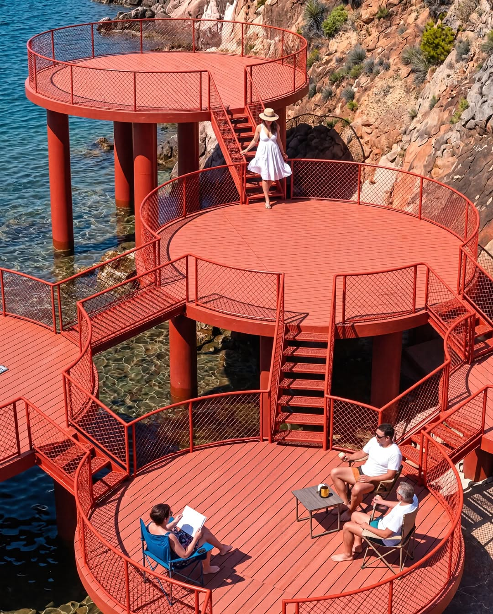
發布時間：2026-06-03 00:06:30
按讚：887 留言：7
A deck built in harmony with nature, without disturbing it. Circular wooden decks rising above the sea create new areas for sunbathing, sitting, swimming, and enjoying the view.
Simply take a photo and sketch on it. Upload to Rendair and create the image.
Try ...
直接開啟媒體（無廣告）
開啟 Instagram 原始貼文
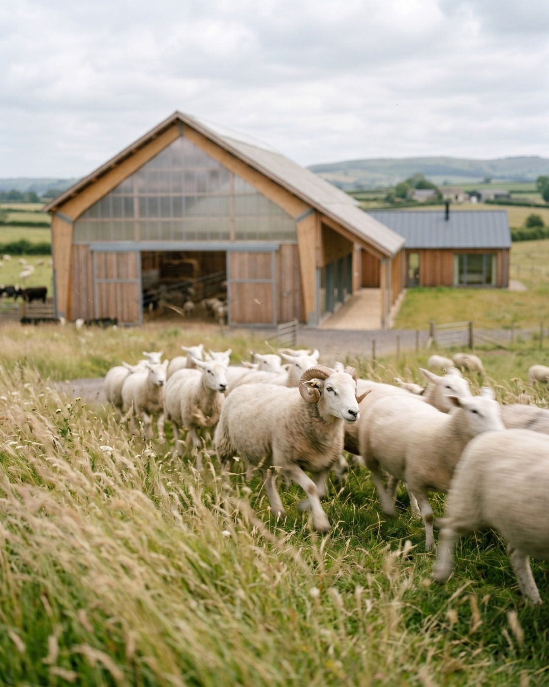
發布時間：2026-06-02 19:59:45
按讚：159 留言：0
House Barn
A contemporary agricultural dwelling that uses glulam construction, translucent envelopes, and vernacular barn typologies. The result is a quiet balance between utility and comfort, tradition and innovation, architecture and landscape.
Try it on Ren...
直接開啟媒體（無廣告）
開啟 Instagram 原始貼文
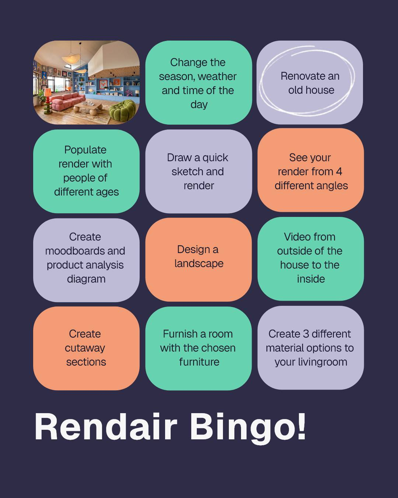
發布時間：2026-06-02 00:08:48
按讚：19 留言：0
The bingo series keeps on rolling! We're giving an old house a makeover.
If you see an old building while walking down the street, take a quick photo, upload it to Rendair, and see your dream renovation instantly! You can even create interior renders and ...
直接開啟媒體（無廣告）
開啟 Instagram 原始貼文
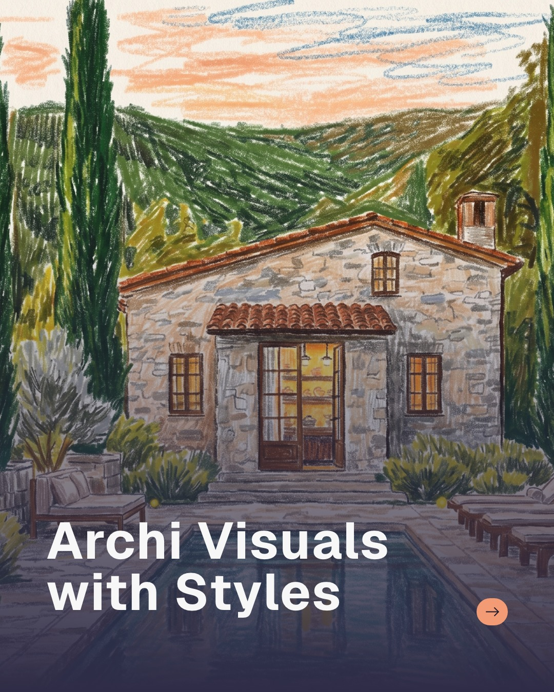
發布時間：2026-06-01 21:15:48
按讚：97 留言：2
Architectural Visuals with AI Styles. ✨
Comic Book Style, Illustration Style, Collage Style, Pencil Sketch, Oil Painting, Watercolor, and much more.
From sketches and paintings to illustrations, comics, collages, and photorealistic visuals, architects are usin...
直接開啟媒體（無廣告）
開啟 Instagram 原始貼文

發布時間：2026-05-27 20:32:19
按讚：155 留言：3
Mediterranean brutalism, romanticized. Flowing geometry meets pink concrete. Curved edges and deep voids amidst the solitude of Mediterranean nature.
Try it yourself → rendair.ai
直接開啟媒體（無廣告）
開啟 Instagram 原始貼文

發布時間：2026-05-26 22:33:28
按讚：108 留言：0
Floorplans Made This with AI.
Real plan-to-visual results created by the Rendair community 👇
1️⃣ Plan to 3D Plan by Justin Glen
2️⃣ Plan to Aerial by Mahmoudm
3️⃣ Plan to Illustration Plan by Omar Lozano
4️⃣ Plan to Axo by Unigradnja Miljkovic
5️⃣ Plan to Rend...
直接開啟媒體（無廣告）
開啟 Instagram 原始貼文

發布時間：2026-05-26 19:59:09
按讚：1,090 留言：5
Apply your dream style to your home! Upload photos of your house to Rendair, describe the style you want, or upload a reference image. See how your chosen style will look while keeping your home exactly the same. Decorate your home in just a few minutes.
Try i...
直接開啟媒體（無廣告）
開啟 Instagram 原始貼文

發布時間：2026-05-25 21:10:58
按讚：35 留言：2
5 AI Use Case for Landscape designers.
You can now go from a simple photo or sketch → full landscape design → realistic render in minutes.
Check out 5 real workflows:from backyard renovations to full urban interventions.
Watch the full tutorial from the link o...
直接開啟媒體（無廣告）
開啟 Instagram 原始貼文

發布時間：2026-05-22 22:31:44
按讚：11.9k 留言：46
House in Mexico!
Designing a modern Mexican home around a central courtyard, where the house opens inward to light, texture, and everyday life.
All images were created with Rendair. You can create images of the same house from different angle, using Rendair AI...
直接開啟媒體（無廣告）
開啟 Instagram 原始貼文

發布時間：2026-05-22 20:33:07
按讚：1,562 留言：37
Turn your renders into a professional interior design presentation board layout with this prompt. You can apply it to any interior space to get a very detailed board. Save this post and use the prompt.
Prompt in the first comment. ⬇️
Try it yourself → rendair....
直接開啟媒體（無廣告）
開啟 Instagram 原始貼文
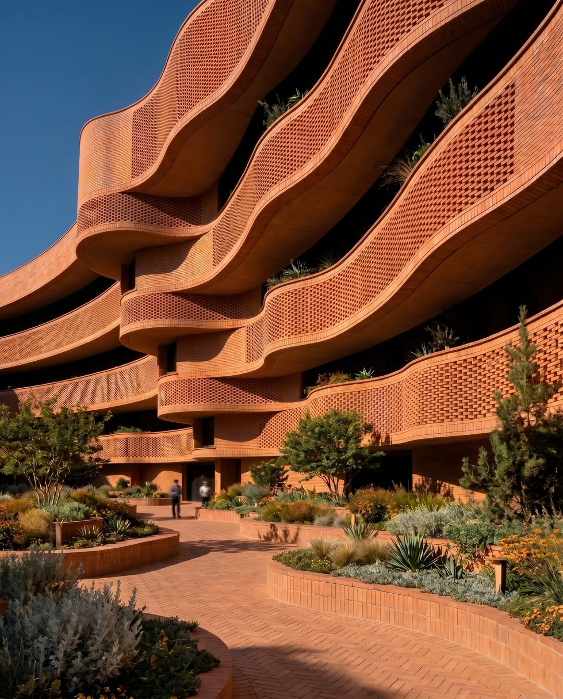
發布時間：2026-05-22 00:06:43
按讚：6,345 留言：28
An oasis of a living complex, constructed with irresistible brickwork. As each apartment becomes a home to a unique life, the entire structure radiates beauty through the enhanced aesthetics of brick.
Try it yourself → rendair.ai
直接開啟媒體（無廣告）
開啟 Instagram 原始貼文

發布時間：2026-05-21 18:18:48
按讚：39 留言：1
Create animations from your renders
With Rendair AI, you can turn renders into smooth animation scenes and explore a villa from multiple angles.
Images created by our user, Sandro Žuljević. Thanks for sharing your results with the community.
Try it yourself → ...
直接開啟媒體（無廣告）
開啟 Instagram 原始貼文

發布時間：2026-05-20 20:15:53
按讚：66 留言：0
Enhance Renders by Adding Details
Add details to your plain renders! Add Landscaping, People and figures, adjust lighting and create animations! All in minutes.
Try it yourself → rendair.ai
直接開啟媒體（無廣告）
開啟 Instagram 原始貼文

發布時間：2026-05-19 23:34:20
按讚：17 留言：2
Start the new series with us: Rendair Bingo! Follow this series where you can get new ideas and inspiration, and where sometimes little tips are shared, and try it out together with us!
Today's goal: we are decorating a house with our favorite style. My f...
直接開啟媒體（無廣告）
開啟 Instagram 原始貼文

發布時間：2026-05-19 20:13:48
按讚：76 留言：0
Interior Designers Made This with AI. ✨
Real interior design results created by the Rendair AI community 👇
1️⃣ Nora Sofalvi
2️⃣ Krzysztof Podbielski
3️⃣ Sharon Wong Mee Sing
4️⃣ Gizem Keskin
5️⃣ Olga L
From concept exploration to final presentation visuals, in...
直接開啟媒體（無廣告）
開啟 Instagram 原始貼文
發布時間：2026-05-18 23:32:39
按讚：128 留言：0
Do you like bubbles? Or making buildings out of bubbles? It brings a little joy to the city!
Try it yourself → rendair.ai
直接開啟媒體（無廣告）
開啟 Instagram 原始貼文

發布時間：2026-05-18 20:10:53
按讚：31 留言：2
Renovating a terrace with real furniture using AI.
From a simple space to a fully designed outdoor living area, with materials, layout, and planting, all in minutes.
Try it yourself → rendair.ai
Watch the full tutorial from the link on the first comment!
**Som...
直接開啟媒體（無廣告）
開啟 Instagram 原始貼文

發布時間：2026-05-15 21:39:53
按讚：2,395 留言：16
A workflow created entirely with Rendair. Generate an isometric diagram, render it. Get a detailed view of any spot you want and create a product diagram. Turn on the lights and invite your cat to this cozy atmosphere!
Try it yourself → rendair.ai
直接開啟媒體（無廣告）
開啟 Instagram 原始貼文

發布時間：2026-05-14 22:05:24
按讚：29 留言：3
We’ve reimagined Tarot cards through an architectural perspective! By blending Gothic and Parametric design, we’ve reinterpreted the Tarot. Push the boundaries of creative production with Rendair.
Try it yourself → rendair.ai
直接開啟媒體（無廣告）
開啟 Instagram 原始貼文

發布時間：2026-05-14 20:35:13
按讚：28 留言：0
Design is often just iteration.
One empty under-stair space.
Multiple functional programs.
→ Reading nook
→ Workspace
→ Storage + pet zone
→ Indoor greenery
→ Kids’ corner
→ Feature installation
Instead of imagining every option manually, explore them instantl...
直接開啟媒體（無廣告）
開啟 Instagram 原始貼文

發布時間：2025-10-29 15:05:55
按讚：584 留言：868
D5極速素材庫 終於上架啦
任意留言送你免費d5模型
-
不小心走火入魔做了超過1300個d5傢俱模型
保證常見款式 且超夠用
後續每月更新材質庫
直到更新完所有類別 立即恢復原價
並附上約6篇材質模型小技巧教學影片
除了素材以外 還能學習到如何自製模型庫
如何自製多通道材質貼圖等等
希望讓大家能花更少的時間畫出更美的圖
就能有更多空檔去休息 去做自己想做的事
希望讓大家畫圖越來越方便🙌🏻
直接開啟媒體（無廣告）
開啟 Instagram 原始貼文

發布時間：2025-10-23 14:10:55
按讚：1,148 留言：1,887
#sketchup 必備外掛特輯又來了
這次是圓角神器 bevel!
是我使用率最高的一款工具
用在曲面天花 圓弧牆 座椅 都超直覺好用
下方任意留言 就送你這個bevel外掛試用檔
-
我也有sketchup高效曲面建模課
歡迎點選主頁連結 有免費課程試看喔！
直接開啟媒體（無廣告）
開啟 Instagram 原始貼文

發布時間：2025-09-25 13:37:48
按讚：577 留言：12
2025室內設計好用免費材質網
1.CC0 Tecture
2.Share Textures
3.Ambient CG
4.Poliigon
5.CGbookcase
6.TextureCan
直接開啟媒體（無廣告）
開啟 Instagram 原始貼文

發布時間：2025-08-21 15:32:01
按讚：2,805 留言：1,003
以下開放任意讚美我的工作空間
就送你10個辦公設備3D模型
-
以前都是幫別人畫出他們的夢想辦公室
接案6年我終於也有自己的小工作空間啦
這次以工作名義買了這些酷東西：
1. MOTTI Kiin升降桌 <a href="/profile/motti.tw/">@motti.tw</a>
2.MOTTI Vertti人體工學椅 <a href="/profile/motti.tw/">@motti.tw</a>
3.cybe...
直接開啟媒體（無廣告）
開啟 Instagram 原始貼文

發布時間：2025-07-31 16:39:48
按讚：449 留言：240
超久沒發圖文
教你如何用 #d5render 做野口勇的紙燈燈罩效果
主要在布藝模板
他有個很棒的功能是可以做半透明的布料
接著搭配法線貼圖給一張布紋
再放入點光源就好啦🙌🏻🙌🏻
隨便留言我送你紙燈模型跟法線貼圖
馬上就可以練習看看
-
更多D5教學 歡迎點擊主頁連結瞭解更多
直接開啟媒體（無廣告）
開啟 Instagram 原始貼文

發布時間：2025-07-30 15:38:14
按讚：1,014 留言：1,665
#sketchup 超萬能的材質替換外掛
搭配材質的時候不用再一個個點進去重新上色啦
使用這個超佛的免費外掛就能一秒替換材質
Material replacer
一樣隨意留言 就傳這個超好用工具rbz檔案給你
-
Sketchup高效曲面建模課
點擊主頁連結 觀看課程免費試看片段
db3drender.com
直接開啟媒體（無廣告）
開啟 Instagram 原始貼文

發布時間：2025-07-17 15:35:20
按讚：1,672 留言：2,244
（任意留言又來送東西惹）
這款2D轉3D的工具到底值不值得克金
沒錯 我直接買了會員給大家實測💸🥹
當你今天找不到客戶指定奇怪款式傢俱
Suapp外掛能直接把圖片轉3D skp模型
但實測下來
建議一定要一體成型的傢俱會是比較好的
他也會自動生成一個照片貼圖貼上去
但我建議都還是再去渲染器上色材質效果更真實
（但如果是比較多複合式材料的傢俱就不太適合）
Ai渲染功能 也都能後置調整並局部替換傢俱
正確設定後也能符合sketchup的模型形體不變形
-
在下方任意留言
我就送你我使用這款suapp生成的10個傢俱sk...
直接開啟媒體（無廣告）
開啟 Instagram 原始貼文

發布時間：2025-06-26 15:13:30
按讚：4,051 留言：2,751
#d5render
曲線燈帶是困擾最多人
也很多人詢問的
我不會再讓你一個個手動去旋轉排列那麼累了
我發現這個超好用的外掛工具
D5輔助工具箱
直接一秒照著你的線條排出燈帶
還能同步到d5視窗中！
-
下方任意留言
我馬上送給你這個好用工具外掛檔案
直接開啟媒體（無廣告）
開啟 Instagram 原始貼文

發布時間：2025-06-19 15:14:16
按讚：901 留言：6
#sketchup 一秒生成樓梯外掛
只要有樓梯的平面圖
都能一鍵enter幫你把所有樓梯踏步做出來
就連曲線車道 斜坡都可以做到
-
S4u make stair plugin
-
[sketchup高效曲面建模課］破600人購買
點選主頁瞭解更多
db3drender.com
直接開啟媒體（無廣告）
開啟 Instagram 原始貼文

發布時間：2025-03-27 16:51:39
按讚：639 留言：20
#sketchup 每次建模要用實心工具的時候
是不是一直跳出超討厭的視窗
說你的東西不是實體
快把你逼瘋
這時候 solid solver這個外掛
超簡單暴力
一秒解決
趕快裝起來
-
我是帶筆 立志成為設計師的3D工具人
D5超寫實渲染課
sketchup曲面建模
enscape電影級渲染
等等線上課程
歡迎有興趣點進課程官網瞭解更多喔！
直接開啟媒體（無廣告）
開啟 Instagram 原始貼文

發布時間：2025-03-08 17:24:50
按讚：236 留言：4
D5 Render 2.10超強更新
-
1.實時路徑追蹤
陰影加重 玻璃 反射材質更準確
材質紋理更細緻明顯
2.優化天氣系統
能做出大雨水霧 颱風天效果
3.自定義白天夜晚環境
增加月亮 銀河 星空背景
4.ai圖像後期
自帶動態模糊 直接免修圖
局部重繪功能
可以一秒替換 天空 人物 植物 水面
-
D5超寫實室內外課程 db3drender.com
開賣一週就破600位啦
這麼帥又好玩的渲染器 必須學起來
<a href="/profile/d5renderofficial/"&g...
直接開啟媒體（無廣告）
開啟 Instagram 原始貼文

發布時間：2025-02-21 16:00:48
按讚：717 留言：5
教你D5的攝影級構圖大法！
-
1.三分法構圖
D5右上角顯示-開啟構圖線
將畫面分成 橫向 縱向各劃分3等分
主角 重點物件（如單椅 沙發 面盆 花瓶）
放在這些線的交點上 使畫面有視覺引導
2.上帝視角構圖法
D5中切換到 透視視圖
緊貼天花板往下看畫面主角
並同時符合三分法交點原則
-
3.前景遮擋
在前方加入模糊的物件
讓視線自然聚焦到主體 創造景深。
模擬躲在後方的「偷窺感」
遮擋物都不超過1/3範圍
-
4.引導線構圖
利用 地板紋理、立面邊緣、天花板線條
將視線引導至畫面重點
地磚分割線 或 燈帶
可...
直接開啟媒體（無廣告）
開啟 Instagram 原始貼文

發布時間：2025-01-27 16:17:52
按讚：387 留言：4
Bangkok mahanakhon building
曼谷像素大廈
-
Modeling software: <a href="/profile/sketchup_official/">@sketchup_official</a>
Rendering software: <a href="/profile/d5renderofficial/">@d5renderofficial</a>
建築渲染也必須學起來！
#sketc...
直接開啟媒體（無廣告）
開啟 Instagram 原始貼文

發布時間：2025-01-16 12:48:43
按讚：487 留言：14
如果倫敦貝果店開在台灣的話
應該會長這樣
If London Bagel museum asked me to design their store in Taipei……
嘗試做出台灣的街景
電線桿、路燈、臨停的機車、紅線的馬路
還有偷偷放了一個打掃的車車
Modeling software: <a href="/profile/sketchup_official/">@sketchup_official</a>
Rendering software: <a h...
直接開啟媒體（無廣告）
開啟 Instagram 原始貼文

發布時間：2025-01-14 17:57:33
按讚：524 留言：20
Ader error店面3D設計
去年底去首爾獨旅
非常佩服ader error的店面設計
頹廢大膽再加上宇宙元素
所就想說自己來畫一間我心目中的分店
-
這間做成教材會不會學習意願提升🤣
-
If Ader error asked me to design their store…
#sketchup3d #d5render #renderbox #renderbook
直接開啟媒體（無廣告）
開啟 Instagram 原始貼文

發布時間：2025-01-07 14:09:33
按讚：721 留言：18
木質侘寂住家設計
已經很久沒畫到那麼喜歡的案子了
Design + rendering: <a href="/profile/db3d.render/">@db3d.render</a>
Modeling software: <a href="/profile/sketchup_official/">@sketchup_official</a>
Rendering software : <a href="/p...
直接開啟媒體（無廣告）
開啟 Instagram 原始貼文

發布時間：2024-12-30 16:02:08
按讚：1,182 留言：7
#ai
設計師2025年必須玩過的強化渲染圖AI工具
1.krea ai
Enhancer用來增強你的渲染圖質感
布料皺摺 或是光影材質不滿意的地方
都能讓你的圖大升級
2.Hailuo ai
讓你渲染圖直接動起來的ai網站
根據你的指令會生成出意想不到的動畫成果
也可以參考官網首頁的指令
貼在你的圖上生成
加入人、動物的效果最好
還很適合生成迷因
-
#sketchup #aiart #ai工具 #3d #室內設計 #室內設計裝潢 #室內設計師
直接開啟媒體（無廣告）
開啟 Instagram 原始貼文

發布時間：2024-12-27 20:22:01
按讚：408 留言：7
密閉微水泥浴室3D設計
Modeling software : <a href="/profile/sketchup_official/">@sketchup_official</a>
Rendering software : <a href="/profile/d5renderofficial/">@d5renderofficial</a>
你們開始玩d5了嗎
直接開啟媒體（無廣告）
開啟 Instagram 原始貼文

發布時間：2024-11-06 14:11:01
按讚：660 留言：5
Enscape必備外掛神器！
智達雲是款我用了很久的外掛集合器
1.能打包整個ens模型
更換設備 電腦路徑
不丟失參數 貼圖 用任何設定
2.超好用資產庫
我的enscape材質包就是使用這個功能
能保存所有凹凸法線反射貼圖
同時
你雜亂的skp模型也能直接導入
資產庫讀取模型也快速並自動生成預覽圖
畫圖更高效
3.常見外掛簡易版
有時候外掛到期或是出現bug不能使用
直接在智達雲搜尋
馬上能找到相對應的功能
使用方式都跟原本一樣
-
Enscape超好用700組材質包
請點選主頁連結
db3drender.co...
直接開啟媒體（無廣告）
開啟 Instagram 原始貼文

發布時間：2024-10-01 00:29:05
按讚：308 留言：12
暗黑石紋臥室
這堂案例要放進教材嗎
-
#sketchup #d5render
直接開啟媒體（無廣告）
開啟 Instagram 原始貼文
發布時間：2026-06-05 11:42:38
按讚：117 留言：5
From Google Earth screenshot to cinematic drone flight. 🌍🚁✨
Cinematic FPV drone shots used to require a professional pilot, travel, and expensive equipment. With AIRILab, all you need is a screenshot from Google Earth and a single drawn line.
Turn anywhere on ...
直接開啟媒體（無廣告）
開啟 Instagram 原始貼文
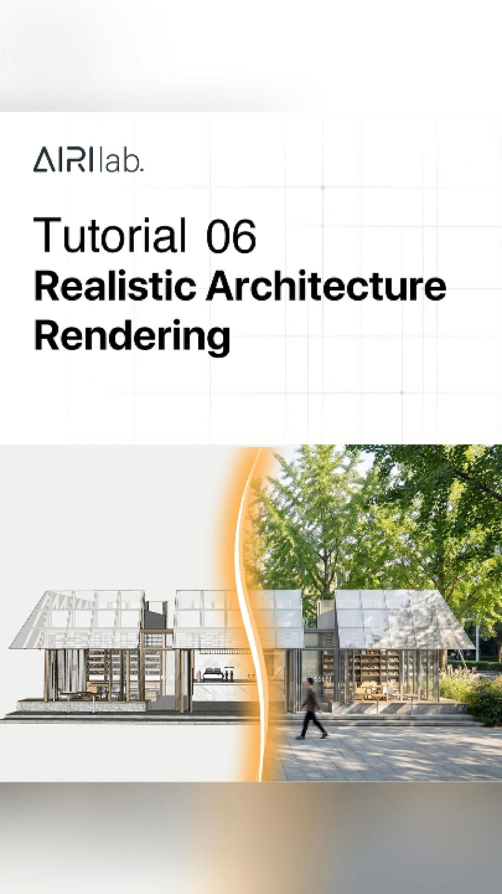
發布時間：2026-06-04 10:53:41
按讚：1,326 留言：18
From SketchUp to Cinema-Grade Rendering in 5 Steps. 📽️✨
Stop spending hours on manual rendering! With AIRILab, your SketchUp models can transform into photorealistic visuals—and then into video—almost instantly.
Here's the Workflow:
1️⃣ Capture: Take a cl...
直接開啟媒體（無廣告）
開啟 Instagram 原始貼文
發布時間：2026-06-03 09:27:39
按讚：150 留言：8
Total control over your AI camera dynamics.
Draw your path:
🔴 Red = High-speed acceleration.
🟢 Green = Smooth, cinematic slow-motion.
Watch the video to see how we blend these speeds into a seamless, hyper-realistic flight through these iconic landscapes.
Prom...
直接開啟媒體（無廣告）
開啟 Instagram 原始貼文
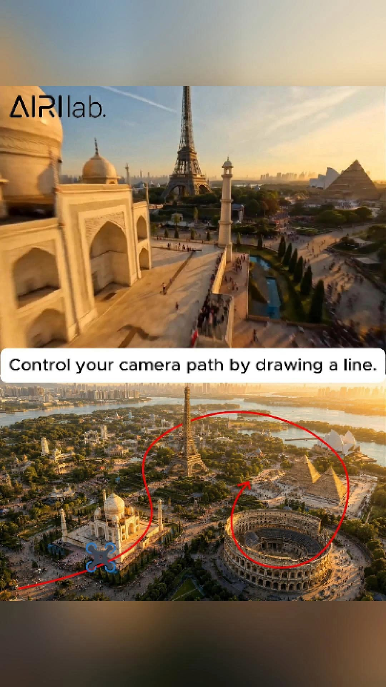
發布時間：2026-06-02 17:06:52
按讚：1,106 留言：232
Draw the path, watch the flight. 🚁✨
Cinematic FPV drone shots used to require a professional pilot and expensive equipment. With AIRILab, they now require nothing more than a single line.
Want to replicate this look? Use this prompt:
"Create a cinematic, ...
直接開啟媒體（無廣告）
開啟 Instagram 原始貼文
發布時間：2026-06-02 11:15:03
按讚：39 留言：0
Don't just renovate—reimagine. 🏗️⚡
Renovation doesn't have to be a gamble. At AIRILab, we're using AI to visualize the potential of existing spaces before a single brick is laid.
Whether you're looking to revitalize a corner unit or transfo...
直接開啟媒體（無廣告）
開啟 Instagram 原始貼文

發布時間：2026-06-01 14:45:43
按讚：91 留言：3
Swipe to see the transformation. 🖍️➡️🏠
Creativity starts with a spark, no matter how simple the sketch. At AIRILab, we believe the best designs often begin as raw imagination.
Swipe to see the transformation and watch how our AI workflow turns these delightful...
直接開啟媒體（無廣告）
開啟 Instagram 原始貼文

發布時間：2026-06-01 14:41:25
按讚：14 留言：0
From Crayon Doodles to Reality! 🎈🖍️
At AIRILab, we believe every masterpiece begins with a simple, uninhibited thought. We're honoring the limitless imagination of kids by bringing their doodles to life.
Watch the transformation in the video as we turn cr...
直接開啟媒體（無廣告）
開啟 Instagram 原始貼文
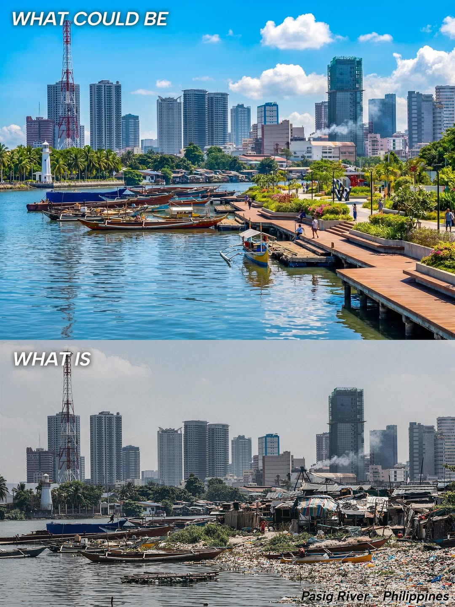
發布時間：2026-05-31 12:00:00
按讚：1,693 留言：30
What if we cared? But what if we don’t? 🌍💔
The gap between the ”What Is“ and the ”What Could Be“ isn‘t a lack of technology—it’s a lack of intention.
At AIRILab, we use AI to visualize the potential of our urban environments. We see the clear, green, thriving ...
直接開啟媒體（無廣告）
開啟 Instagram 原始貼文
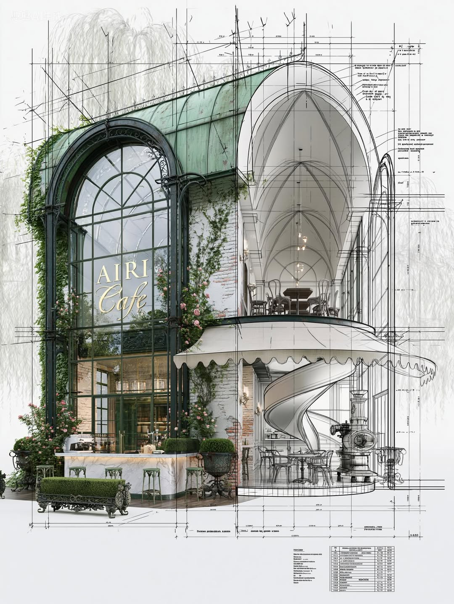
發布時間：2026-05-30 12:50:00
按讚：1,150 留言：11
Where technical precision meets creative freedom. ☕️✨
Design isn‘t just about the final render—it’s about the narrative of the structure. We‘re exploring the potential of ”AIRI Cafe“ through a series of hybrid concepts, blending raw architectural sketches with...
直接開啟媒體（無廣告）
開啟 Instagram 原始貼文

發布時間：2026-05-29 11:14:45
按讚：180 留言：3
Beyond the render: The science behind the facade. 🏛️🔍
Presenting Vol. 01 of our Comprehensive Facade Study.
At AIRILab, we believe design is a rigorous balance of aesthetics, structural performance, and environmental responsibility. We're moving beyond ju...
直接開啟媒體（無廣告）
開啟 Instagram 原始貼文
發布時間：2026-05-28 10:36:14
按讚：114 留言：1
From aging facade to modern cafe in just a few clicks. ☕️✨
Renovation doesn't have to start with a sledgehammer. At AIRILab, we're using AI to reimagine the potential of existing spaces before construction begins.
In our latest tutorial, we walk you ...
直接開啟媒體（無廣告）
開啟 Instagram 原始貼文
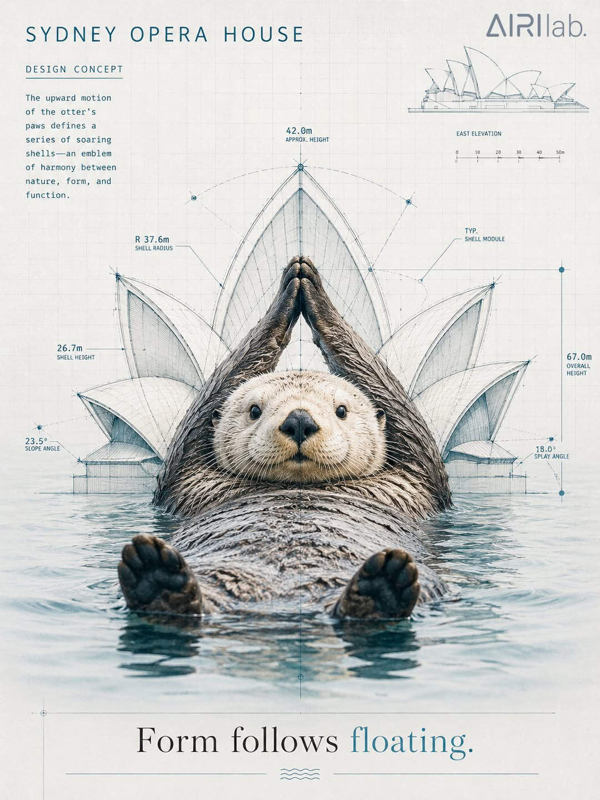
發布時間：2026-05-27 17:05:24
按讚：310 留言：0
Celebrating World Otter Day with a touch of biomimetic genius. 🦦🏗️
They aren't just masters of the water; they're masters of form. In honor of World Otter Day, we're revisiting some of our favorite architectural concepts inspired by our furry fr...
直接開啟媒體（無廣告）
開啟 Instagram 原始貼文

發布時間：2026-05-27 10:39:00
按讚：74 留言：0
Redefining the retail experience, one facade at a time. 🏗️✨
The high street is evolving. From the fluid, organic curves of luxury boutiques to bio-integrated urban interventions, we are pushing the boundaries of what a facade can be.
At AIRILab, we believe tha...
直接開啟媒體（無廣告）
開啟 Instagram 原始貼文
發布時間：2026-05-26 10:29:06
按讚：33 留言：1
One building, infinite potential. 🏙️✨
"Reimagine. Redesign. Renew."
Adaptive reuse is the most sustainable path forward for our cityscapes. At AIRILab, we're utilizing AI to explore the possibilities of aging infrastructure before a single brick...
直接開啟媒體（無廣告）
開啟 Instagram 原始貼文

發布時間：2026-05-25 10:22:15
按讚：126 留言：1
From SketchUp to photorealism in seconds. ⚡️ The AIRILab workflow.
#airilab #aiarchitecture #sketchup #rendering #archviz #designworkflow
直接開啟媒體（無廣告）
開啟 Instagram 原始貼文

發布時間：2026-05-23 20:45:00
按讚：623 留言：6
#airilab #aiarchitecture #architecturedesign #zahahadid #tadaoando #lecorbusier #architecturalrendering #designinspiration #archdaily #aiartcommunity
直接開啟媒體（無廣告）
開啟 Instagram 原始貼文

發布時間：2026-05-23 10:00:00
按讚：4,657 留言：43
Which architectural master guides your creative vision? 🏛️✨
At AIRILab, we believe that innovation in AI design starts with a deep appreciation for the pioneers of space. From Zaha Hadid’s fluid dynamism to Tadao Ando‘s mastery of light, and Mies van der Rohe’...
直接開啟媒體（無廣告）
開啟 Instagram 原始貼文

發布時間：2026-05-22 10:10:22
按讚：4,452 留言：15
A single, continuous gesture weaving through the city. 🔴✨
Introducing "The Red Ribbon" — a conceptual urban vision created with AIRILab.
We set out to challenge the fragmentation of modern waterfronts by introducing a singular, fluid architectural ge...
直接開啟媒體（無廣告）
開啟 Instagram 原始貼文

發布時間：2026-05-21 10:38:02
按讚：569 留言：3
The beauty of urban planning lies in the details. This exploded axonometric site analysis is a testament to how we can break down complex data into legible, visual narratives.
By separating layers like land use, infrastructure, and urban growth, we gain a 360-...
直接開啟媒體（無廣告）
開啟 Instagram 原始貼文

發布時間：2026-05-20 10:37:14
按讚：755 留言：16
From Satellite to Masterplan Diagram. 🌍📐
Creating museum-quality urban planning diagrams usually requires hours of GIS data processing, AutoCAD drafting, and Illustrator refinement.
With AIRILab, you can generate architectural competition-ready masterplans wit...
直接開啟媒體（無廣告）
開啟 Instagram 原始貼文

發布時間：2026-01-27 20:56:40
按讚：1,146 留言：8
When creation becomes frictionless, the value moves elsewhere. Into intent, interpretation, and presence.
#Shanshui in Motion is an interactive installation by Studio Tim Fu that reimagines traditional Chinese landscape painting as an immersive, responsive exp...
直接開啟媒體（無廣告）
開啟 Instagram 原始貼文
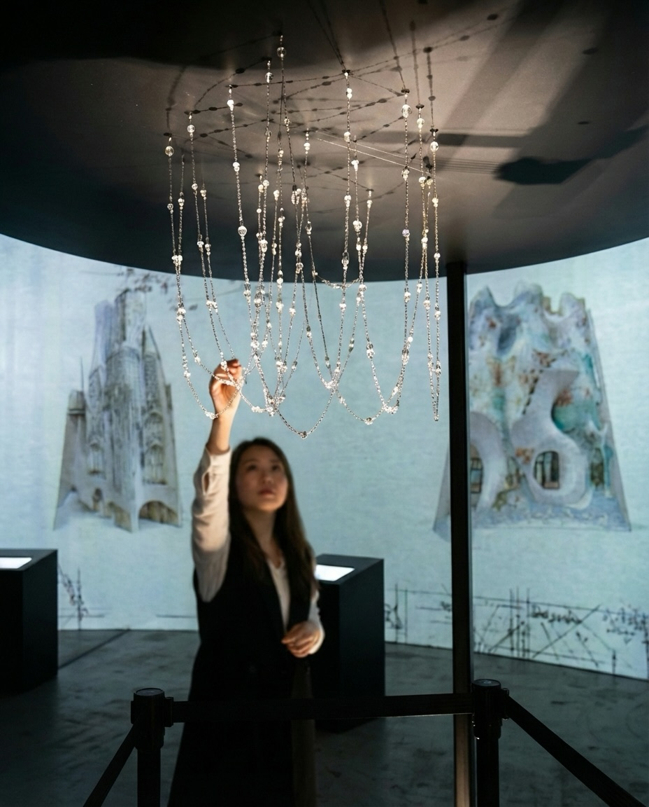
發布時間：2026-01-12 21:11:08
按讚：541 留言：1
“Gaudí: Back to the Origins” is now open. The exhibition presents an interactive installation that connects physical form-finding with real-time computation.
Visitors can manipulate physical and digital funicular models and see the results rendered live throug...
直接開啟媒體（無廣告）
開啟 Instagram 原始貼文

發布時間：2026-01-08 21:03:00
按讚：2,271 留言：12
We’re excited to share a new partnership (<a href="/profile/gaudifoundation/">@gaudifoundation</a> and <a href="/profile/studiotimfu/">@studiotimfu</a> ), focused on turning
Gaudi’s method into a living platform for...
直接開啟媒體（無廣告）
開啟 Instagram 原始貼文

發布時間：2026-01-06 01:52:22
按讚：152 留言：14
We’re proud to recognise Elahe Mahani as the first STF Talent Support Program recipient.
Elahe’s story:
Iran, her home country, is currently under severe economic pressure. The rial has hit record low following inflation, which has made international financial...
直接開啟媒體（無廣告）
開啟 Instagram 原始貼文
發布時間：2026-06-06 00:57:47
按讚：20.0k 留言：128
A Walking City
Homage to the radical optimism of Archigram and Ron Herron, reimagined through contemporary diffusion AI as a roaming civic machine. Across water, desert, mountains, and urban edges, the city becomes untethered from the ground, no longer fixed a...
直接開啟媒體（無廣告）
開啟 Instagram 原始貼文

發布時間：2025-12-20 21:17:06
按讚：536 留言：7
Internal Tool Reveal: STF Gradient Stylizer
As architects, we often think in gradients and seek harmony through the act of balance. The Gradient Stylizer is an AI-powered tool developed to fulfil that need.
Part of our showcase of internal toolsets developed t...
直接開啟媒體（無廣告）
開啟 Instagram 原始貼文
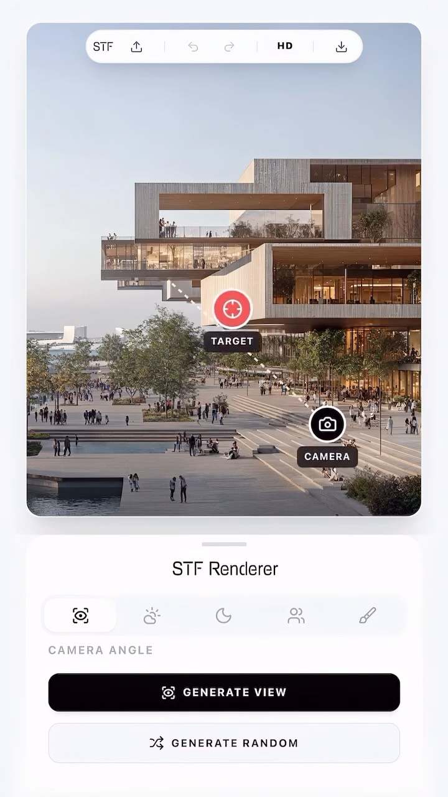
發布時間：2025-12-16 00:30:45
按讚：4,462 留言：63
Internal Tool Reveal: STF Renderer
A much needed tool for the post-AI pipeline, you can upload AI visuals and imagine alternate views with full control at breakneck speed, edit weather, people, and other parameters
Part of our showcase of AI-powered internal t...
直接開啟媒體（無廣告）
開啟 Instagram 原始貼文

發布時間：2025-12-05 23:01:04
按讚：802 留言：34
Internal Tool Reveal: STF Interiors
We are showcasing some of our AI-powered internal toolsets developed to superpower our daily rapid design and visualisation services.
STF Interiors lets you upload interior renders or photos, swap in furniture from your exis...
直接開啟媒體（無廣告）
開啟 Instagram 原始貼文

發布時間：2025-11-23 03:40:06
按讚： 留言：73
MOON by <a href="/profile/manoloark/">@manoloark</a>
• New Project
• Location - VILAMOURA- ALGARVE - PORTUGAL
• Bioarchitecture by <a href="/profile/manoloark/">@manoloark</a>
— BE ARK —
直接開啟媒體（無廣告）
開啟 Instagram 原始貼文

發布時間：2025-10-31 22:38:00
按讚：583 留言：10
Chromatic Chambers
直接開啟媒體（無廣告）
開啟 Instagram 原始貼文

發布時間：2025-10-28 02:06:46
按讚：2,702 留言：47
Replace hours of manual modelling with instant spatial exploration!
Studio Tim Fu has teamed up with Tripo 3.0, a revolutionary tool that turns ideas into 3D models within minutes, transforming how we approach concept design.
Hurry for this unique offer! :
The...
直接開啟媒體（無廣告）
開啟 Instagram 原始貼文
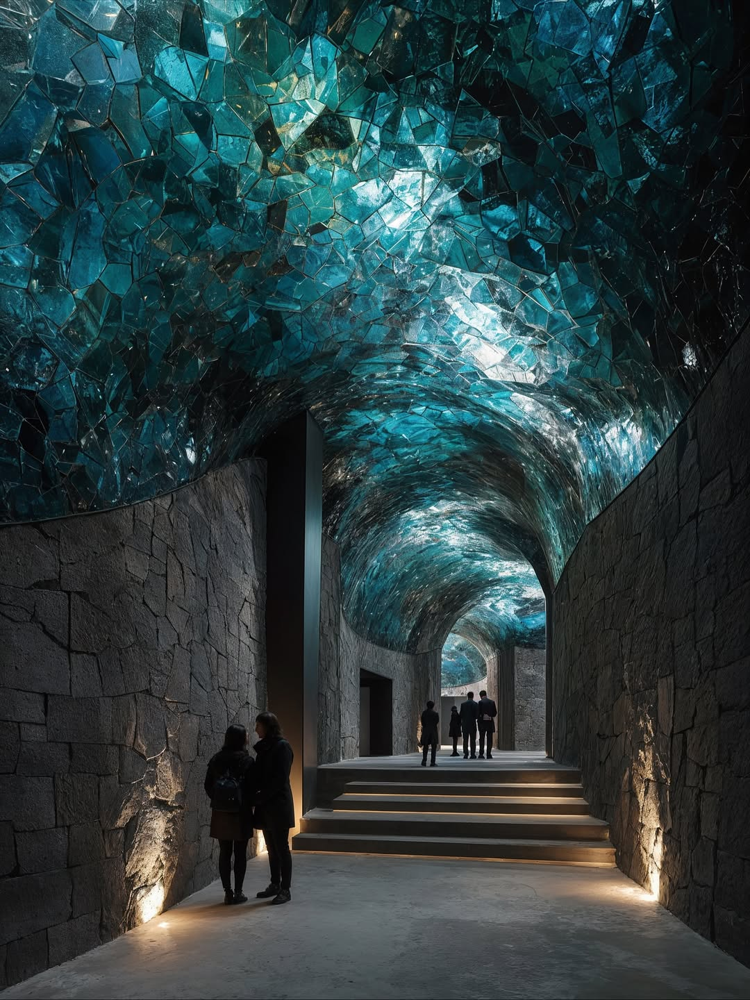
發布時間：2025-10-24 02:24:33
按讚：2,661 留言：35
Natural Minerals Museum
直接開啟媒體（無廣告）
開啟 Instagram 原始貼文
發布時間：2025-10-03 20:31:26
按讚：732 留言：272
“Everything changed in July 2022 when I discovered Midjourney, a text-to-image generator. I began experimenting with it and quickly saw the potential for generating interesting architectural content.
Realising that many people were interested in AI’s ability t...
直接開啟媒體（無廣告）
開啟 Instagram 原始貼文
發布時間：2025-09-28 19:11:34
按讚：1,199 留言：22
Celestial Observatory Lounge ✨🔭
Divine Spaces
直接開啟媒體（無廣告）
開啟 Instagram 原始貼文
發布時間：2025-09-25 20:14:58
按讚： 留言：0
（無文字）
直接開啟媒體（無廣告）
開啟 Instagram 原始貼文
發布時間：2025-09-25 20:14:24
按讚： 留言：0
（無文字）
直接開啟媒體（無廣告）
開啟 Instagram 原始貼文
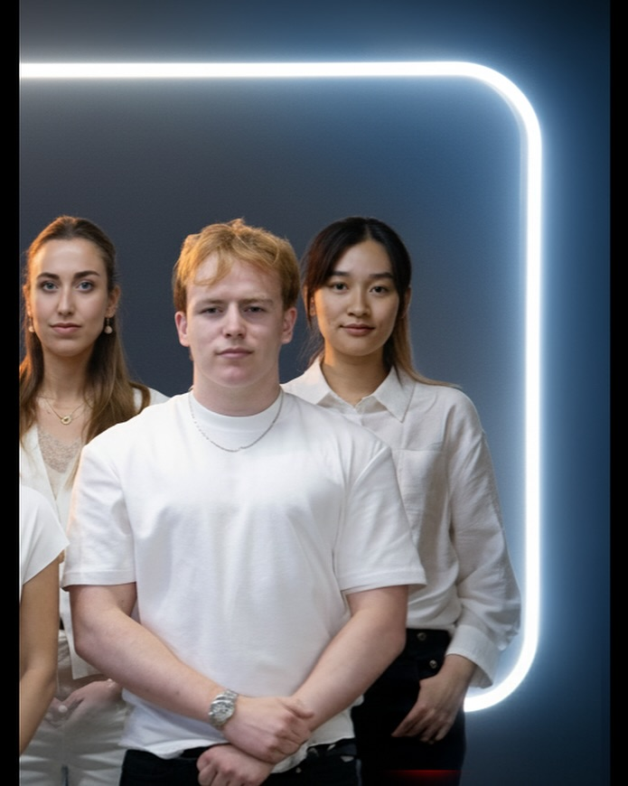
發布時間：2025-09-25 20:13:24
按讚： 留言：0
（無文字）
直接開啟媒體（無廣告）
開啟 Instagram 原始貼文
發布時間：2025-09-24 19:30:28
按讚：4,580 留言：33
The Vault
Bar and Lounge that balances the warmth of oak and texture of bare concrete
直接開啟媒體（無廣告）
開啟 Instagram 原始貼文
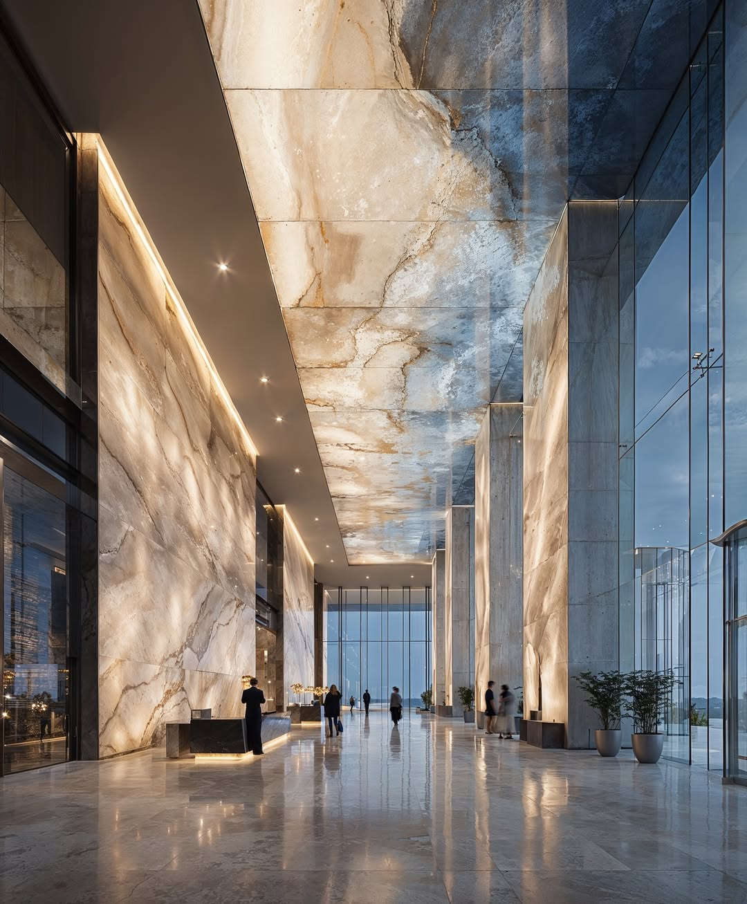
發布時間：2025-09-24 01:20:17
按讚：4,645 留言：40
Mineral Monoliths
Veined stone planes parallels clerestory glazing.
Reflective mineral ceilings and concealed linear lights.
Amplifying terxture and height.
直接開啟媒體（無廣告）
開啟 Instagram 原始貼文
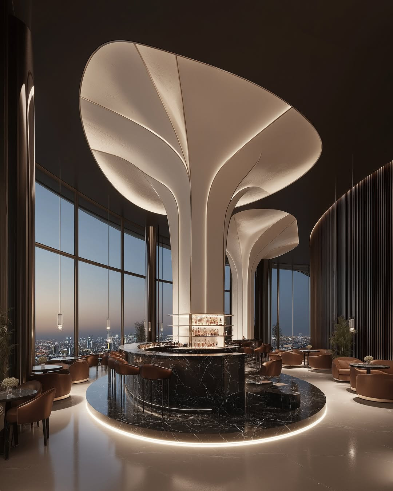
發布時間：2025-09-16 23:53:17
按讚：1,639 留言：25
Canopy Bar and Lounge
#timfu #studiotimfu #aiarchitecture #ai #architecture #luxury #luxuryinterior #parametricarchitecture #futuristic #interior #architecturephotography #interiordesign #arquitectura
直接開啟媒體（無廣告）
開啟 Instagram 原始貼文
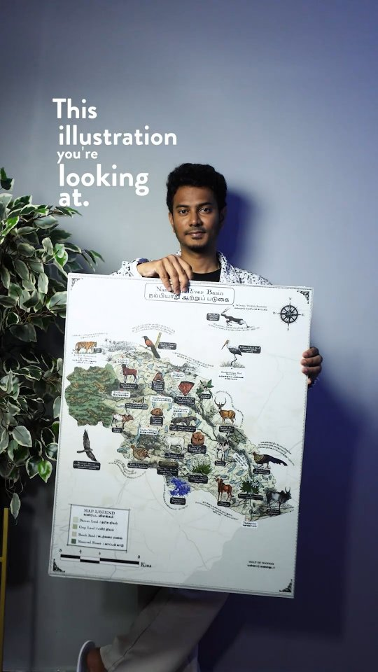
發布時間：2026-05-06 19:55:06
按讚：68.6k 留言：78
An illustration I made is now permanently installed in one of South India’s largest museums. Still processing that. ✏️
This is one of three installations we did for the Porunai Museum in Tirunelveli — a hand-drawn map of the Nambiyar River Basin, with every ma...
直接開啟媒體（無廣告）
開啟 Instagram 原始貼文
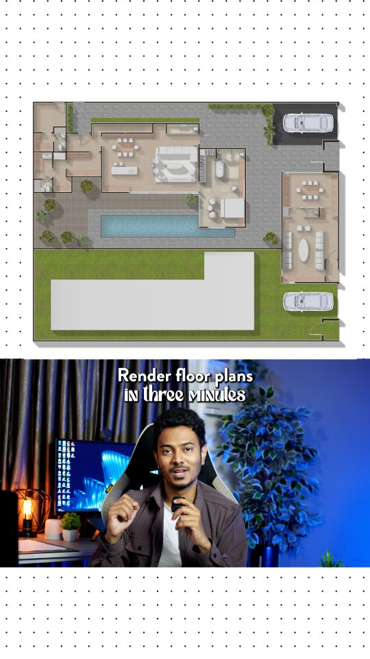
發布時間：2026-04-15 12:57:28
按讚：624 留言：728
Comment 'Render' to for the access link 🔥
Architecture software and workflows keep evolving… but presentation? It’s been lagging behind 🐢
Until now.
Bildigo changes the game ⚡
Think of it as Figmabut for architectural drawings.
✨ Apply pre-made layer...
直接開啟媒體（無廣告）
開啟 Instagram 原始貼文
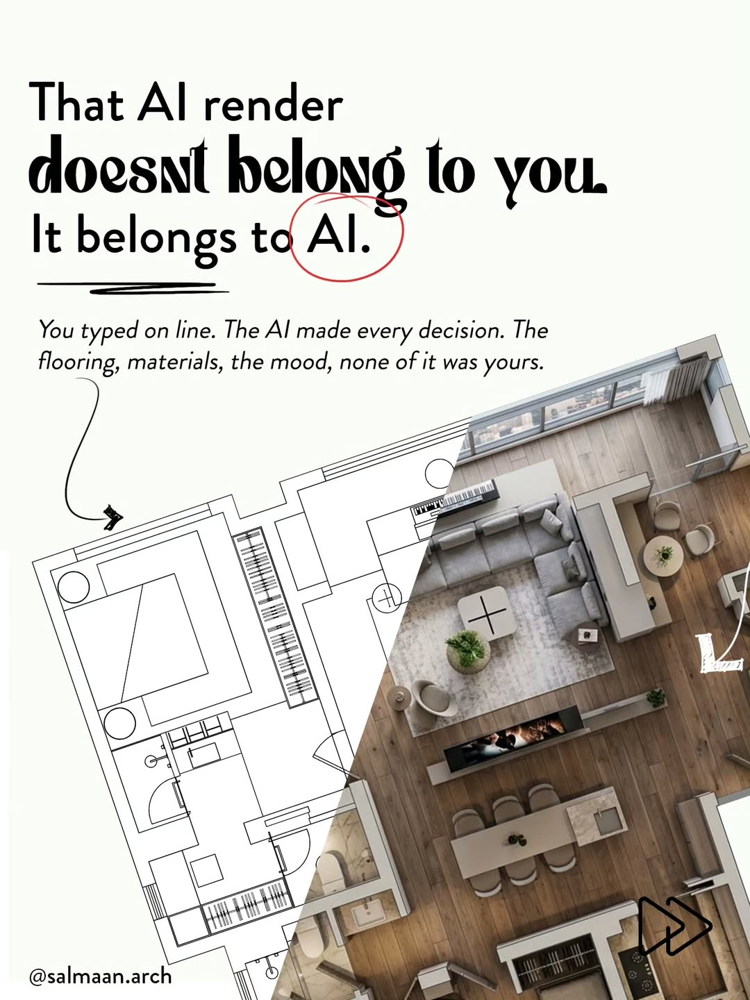
發布時間：2026-05-03 10:19:38
按讚： 留言：502
Comment 'Render' to access the Realistic Floor Plan Rendering Masterclass 📹
Most people aren’t directing AI renders… they’re just generating images.
And that’s the problem. ⚠️
AI decides the materials, textures, mood—everything. You get a “nice” outp...
直接開啟媒體（無廣告）
開啟 Instagram 原始貼文
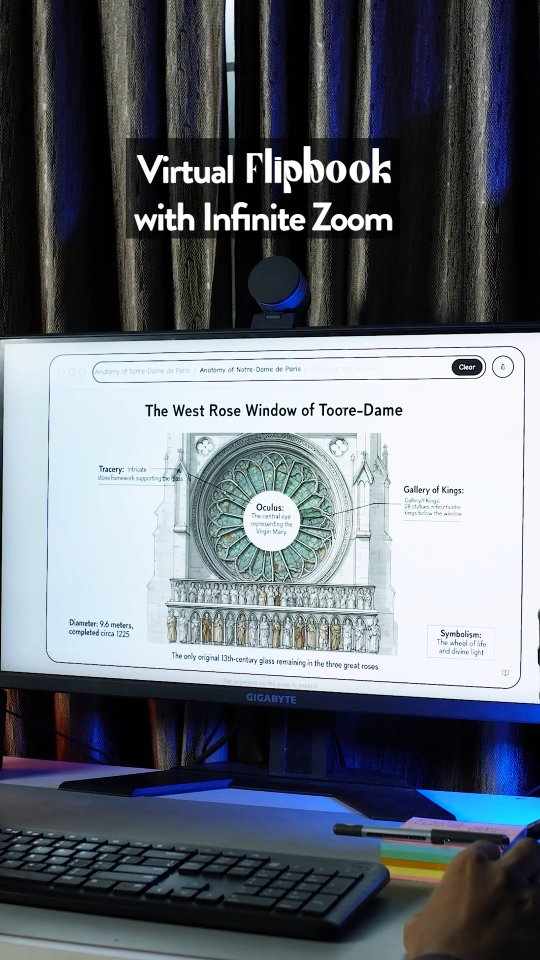
發布時間：2026-04-29 23:25:13
按讚：634 留言：565
Comment 'Flipbook' for the website link 🔗
Found this really cool virtual flipbook website that lets you infinitely zoom into architecture 👀
Started with an isometric view of Notre-Dame Cathedral… and kept discovering new details with every zoom. From...
直接開啟媒體（無廣告）
開啟 Instagram 原始貼文
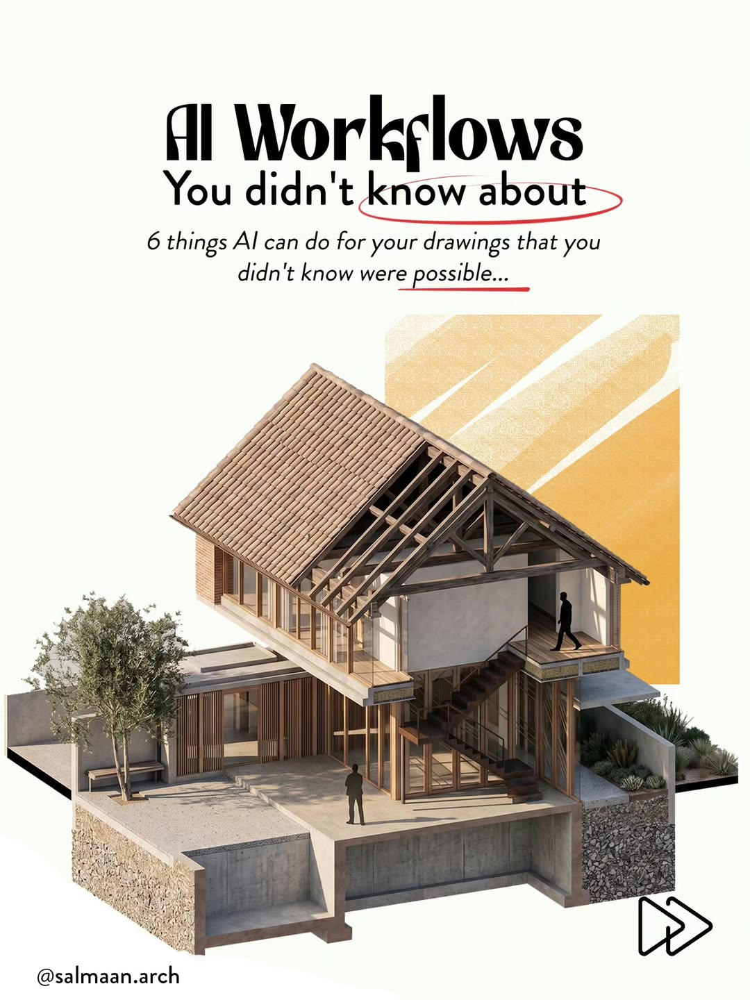
發布時間：2026-04-29 12:00:52
按讚：1,311 留言：885
Comment “Workflow” for the prompts and access the Floor plan rendering masterclass 🚀
Most architects are still doing this the long way…
Redrawing elevations. Building shadows manually. Rendering from scratch.
Meanwhile, these AI workflows are quietly cutting h...
直接開啟媒體（無廣告）
開啟 Instagram 原始貼文

發布時間：2026-04-23 00:39:46
按讚： 留言：0
He took a sketchbook to war? 🤯
This architect sketched his way through WWII. 158 drawings. Soldiers, rubble, faces. All of it. ✏️
Victor Lundy chose to witness even when witnessing was painful. And he never stopped drawing, even after the war ended. 💐
Every ti...
直接開啟媒體（無廣告）
開啟 Instagram 原始貼文
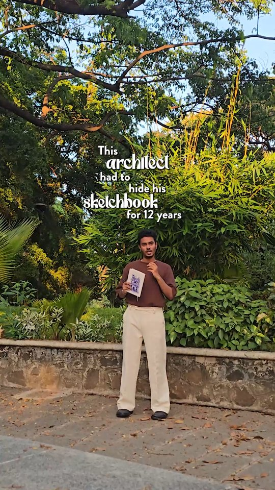
發布時間：2026-04-21 20:12:08
按讚： 留言：5
Hans Scharoun's day job under the regime? Walking through bombed cities and documenting the damage. Every single morning.
But at night — sketchbook open. Organic forms, vibrant colors, spaces built around people. The complete opposite of everything the st...
直接開啟媒體（無廣告）
開啟 Instagram 原始貼文
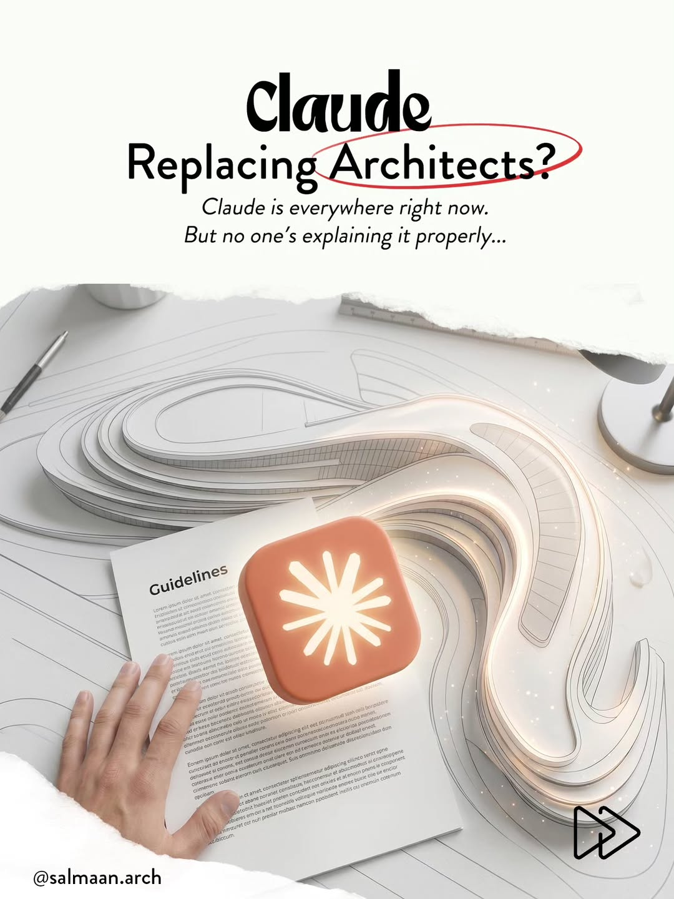
發布時間：2026-04-23 19:01:45
按讚：2,090 留言：1,339
Comment 'Video' to watch it on YouTube and download the FREE prompt guide 🔥
Everyone’s talking about Claude right now… but most of it is just noise 👀
So I spent a few days actually using it in my workflow
And honestly… it surprised me.
This isn’t one...
直接開啟媒體（無廣告）
開啟 Instagram 原始貼文

發布時間：2026-04-15 13:47:35
按讚：1,424 留言：2,190
Comment 'Render' for the access link 🔥
What if one drawing could have 16 different looks… instantly? 🎨
With Bildigo, you can switch between 16+ rendering styles with just one click ⚡
No reworking, no starting over, just tap and completely transform y...
直接開啟媒體（無廣告）
開啟 Instagram 原始貼文

發布時間：2026-04-16 18:03:39
按讚： 留言：282
Comment 'Plan' to access the Floor Plan Rendering Masterclass with Nano Banana 🔥
Everyone’s using AI… but why does everything still look the same? 🤔
We’ve got tools that can generate any rendering style…
yet most floor plans online feel copy-pasted. ...
直接開啟媒體（無廣告）
開啟 Instagram 原始貼文

發布時間：2026-04-17 12:43:38
按讚：776 留言：211
Rendering floor plans doesn’t have to take hours anymore ⏳
What used to be a long, repetitive process…
can now be done in minutes with multiple styles, cleaner outputs, and way more flexibility. 🎨
We've broken down the workflow of Bildigo and how it actua...
直接開啟媒體（無廣告）
開啟 Instagram 原始貼文

發布時間：2026-04-12 13:28:46
按讚：468 留言：135
Comment 'Model' for the access link and full video 📹
Exploring a workflow where a simple concept sketch transforms into a 3D model. 🏢
The idea? To move beyond just 2D and start designing, visualising, and testing directly in 3D. Place your model on t...
直接開啟媒體（無廣告）
開啟 Instagram 原始貼文

發布時間：2026-03-28 21:37:27
按讚：2,222 留言：1,002
Comment 'Model' for the access link, prompts and a detailed video 📹
The best results don’t come from a single tool, they come from combining workflows intelligently.
In this experiment, we extracted multiple elevations of the Centre Pompidou and fed ...
直接開啟媒體（無廣告）
開啟 Instagram 原始貼文
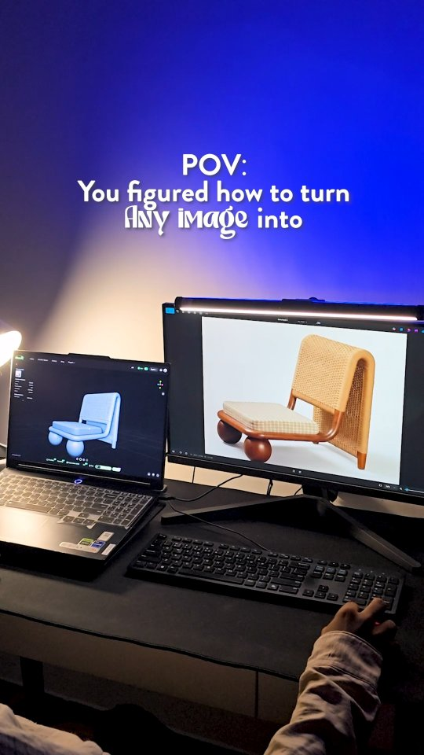
發布時間：2026-03-24 22:15:56
按讚： 留言：107
Comment “Model” to try it out now! 🪑
I’ve been experimenting with AI Image → 3D tools lately, and this one was created using Hitem3D. Honestly, didn’t expect it to turn out this usable.
We’ve shared a full breakdown on YouTube where I test it across different ...
直接開啟媒體（無廣告）
開啟 Instagram 原始貼文

發布時間：2026-03-10 21:28:27
按讚：784 留言：398
Comment 'Render' for the download link and full tutorial 🔑
If you're wondering which render tool to pick this year, without any complicated setups or learning curve, D5 might be the ideal choice. And in the latest version 3.0, they've integ...
直接開啟媒體（無廣告）
開啟 Instagram 原始貼文

發布時間：2026-03-01 22:09:18
按讚： 留言：158
Comment 'Render' for full tutorial and free download link to D5 🤯🔥
This project is part of our D5 3.0 review on YouTube. The new features on D5 are on another level, an intersection of traditional visualisation workflow and practical integration of A...
直接開啟媒體（無廣告）
開啟 Instagram 原始貼文

發布時間：2026-02-28 22:41:02
按讚： 留言：229
Comment 'Nano' to watch the full review of the new version Nano Banana 2 🤯
This new update brings Pro-level intelligence with Flash-level speed — which basically means faster iterations, cleaner text inside images (finally!), and much better visual c...
直接開啟媒體（無廣告）
開啟 Instagram 原始貼文

發布時間：2026-02-10 21:58:44
按讚：552 留言：161
Comment 'D5' for the full tutorial and access link 📹
The latest version of D5 3.0 comes with a game changing plugin called D5 Lite. This allows users to render a Sketchup scene directly within the modelling software without even opening D5 Render 🤯
Y...
直接開啟媒體（無廣告）
開啟 Instagram 原始貼文

發布時間：2026-02-03 22:00:09
按讚：697 留言：186
Comment 'Render' to watch the full process and access link 📹
Walkthroughs created in D5 Render 3.0 for our full YouTube tutorial. 🚀
Hyper-realistic renders and smooth walkthroughs are now insanely easy to achieve, even if you’re a beginner.
D5 3.0’s ...
直接開啟媒體（無廣告）
開啟 Instagram 原始貼文

發布時間：2026-02-02 19:06:17
按讚： 留言：82
Comment 'Render' for the access link and full walkthrough 📹✨
Just got my hands on D5 3.0 and it's no longer just a renderer. It’s a complete end-to-end visualization workflow.
Model in SketchUp with real-time updates using D5 Lite, drop in produ...
直接開啟媒體（無廣告）
開啟 Instagram 原始貼文
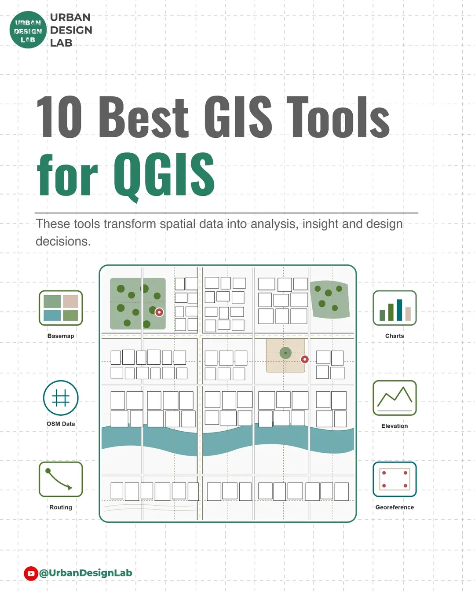
發布時間：2026-06-13 00:41:09
按讚： 留言：2
Follow <a href="/profile/urbandesignlab.in/">@urbandesignlab.in</a>
Good mapping is not only about creating beautiful visuals. It is about reading places, measuring patterns, and translating spatial data into design intelligence.
For urb...
直接開啟媒體（無廣告）
開啟 Instagram 原始貼文
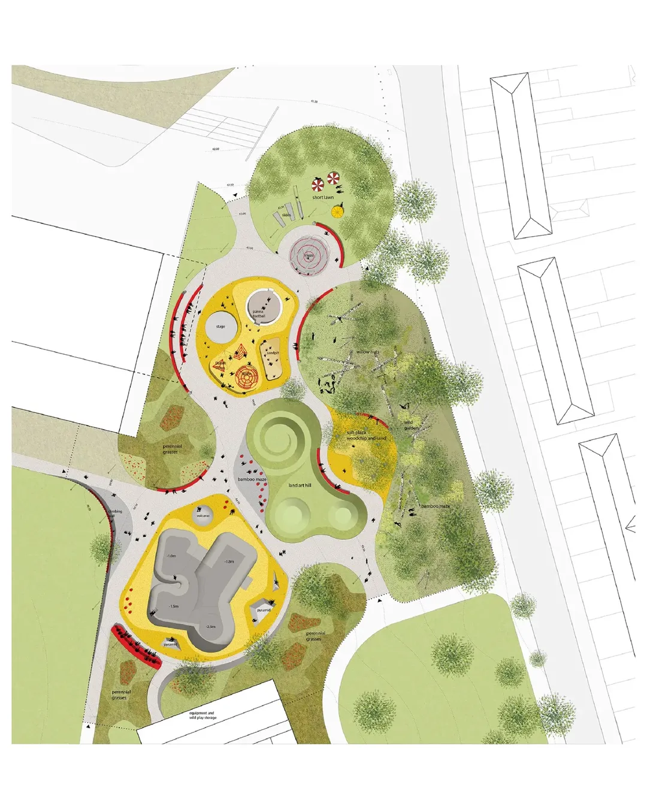
發布時間：2026-06-12 23:38:46
按讚： 留言：2
Follow <a href="/profile/urbandesignlab.in/">@urbandesignlab.in</a>
Ballyfermot Playground reimagines play as a catalyst for transforming a central green space into a more active, inclusive, and identity-rich public landscape.
Located wi...
直接開啟媒體（無廣告）
開啟 Instagram 原始貼文
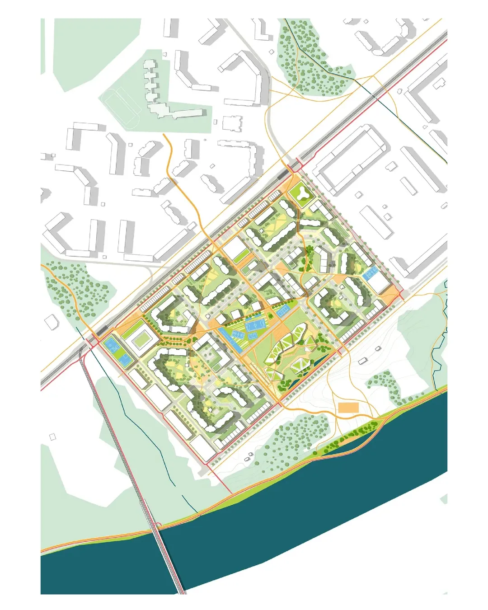
發布時間：2026-06-11 20:42:17
按讚： 留言：0
Follow <a href="/profile/urbandesignlab.in/">@urbandesignlab.in</a>
Polotsk, Novopolotsk, and Novogrudok Green Cities explore how underperforming urban areas can be transformed through connectivity, heritage, ecology, and participatory p...
直接開啟媒體（無廣告）
開啟 Instagram 原始貼文
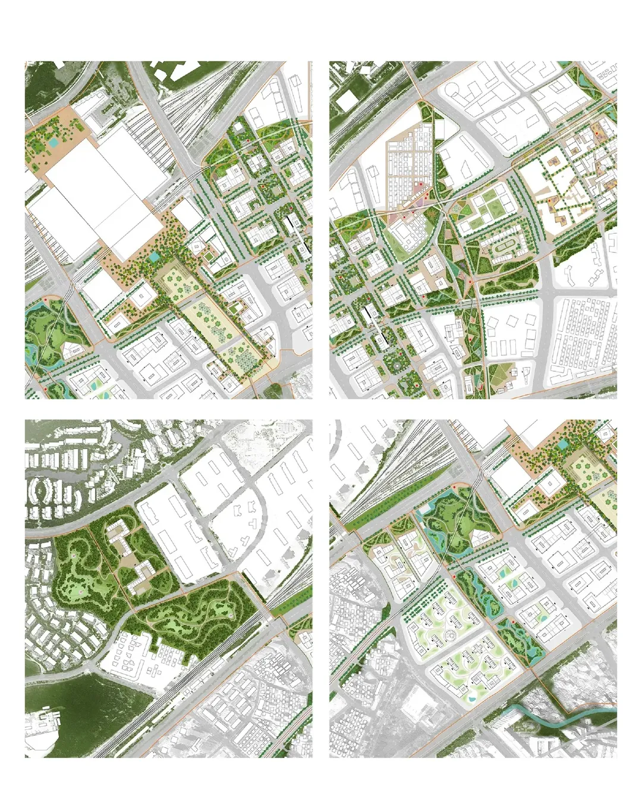
發布時間：2026-06-11 12:47:19
按讚： 留言：0
Follow <a href="/profile/urbandesignlab.in/">@urbandesignlab.in</a>
The Green Valley transforms Shenzhen’s Longhua District into a landscape-connected urban environment where parks, hills, water systems, and everyday city life become par...
直接開啟媒體（無廣告）
開啟 Instagram 原始貼文
發布時間：2026-06-10 23:27:36
按讚： 留言：4
Follow <a href="/profile/urbandesignlab.in/">@urbandesignlab.in</a>
Cities are not only shaped by roads, buildings, zoning plans, and infrastructure. They are shaped by observation, memory, public life, movement, identity, and the everyd...
直接開啟媒體（無廣告）
開啟 Instagram 原始貼文
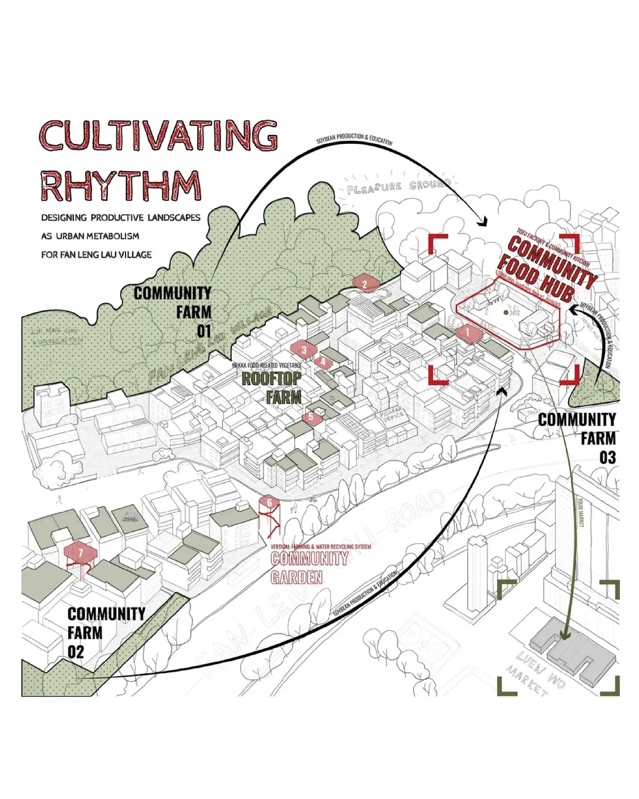
發布時間：2026-06-10 16:05:19
按讚：1,042 留言：1
Follow <a href="/profile/urbandesignlab.in/">@urbandesignlab.in</a>
Cultivating Rhythms reimagines the urban village as a productive green lung where agriculture, community life, and urban resilience grow together.
Set within the Fan Len...
直接開啟媒體（無廣告）
開啟 Instagram 原始貼文
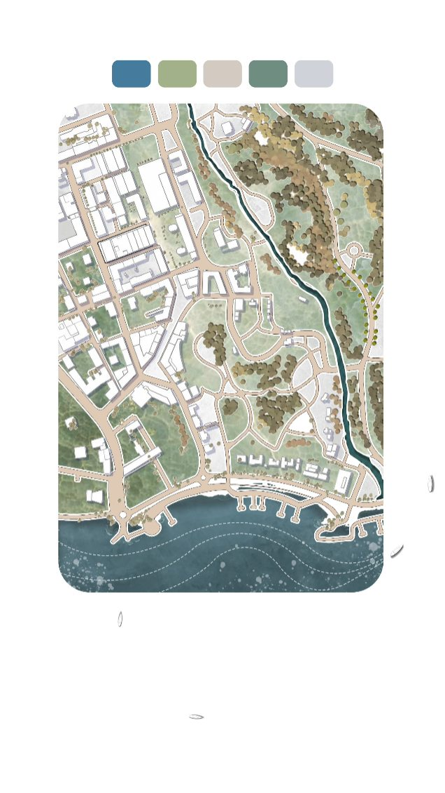
發布時間：2026-06-10 01:55:22
按讚：1,324 留言：1
A Step-by-Step Workflow for GIS-Based Map Rendering
From spatial analysis to visual storytelling, GIS and Adobe Illustrator together offer one of the most powerful workflows for creating professional urban design maps. While GIS helps generate accurate spatial...
直接開啟媒體（無廣告）
開啟 Instagram 原始貼文
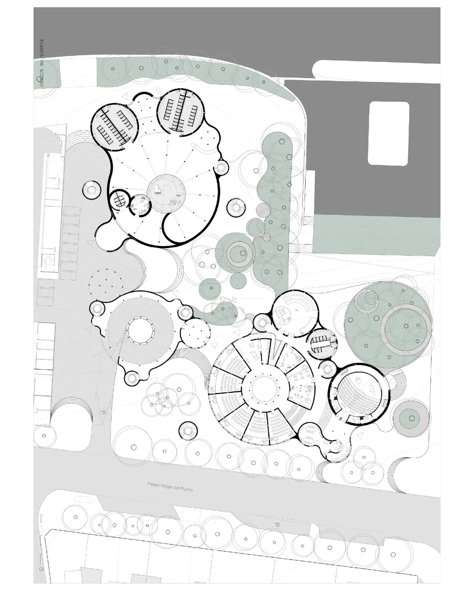
發布時間：2026-06-09 16:31:39
按讚： 留言：0
Follow <a href="/profile/urbandesignlab.in/">@urbandesignlab.in</a>
Metaxy explores architecture as an intermediate condition, a spatial threshold where music, landscape, learning, and collective life coexist.
Located on the Sala La Rivi...
直接開啟媒體（無廣告）
開啟 Instagram 原始貼文
發布時間：2026-06-09 02:51:02
按讚： 留言：0
Follow <a href="/profile/urbandesignlab.in/">@urbandesignlab.in</a>
Waterlandkwartier Purmerend transforms a forgotten station district into a future-ready urban quarter shaped by mobility, landscape, water, and mixed-use city life.
Loca...
直接開啟媒體（無廣告）
開啟 Instagram 原始貼文
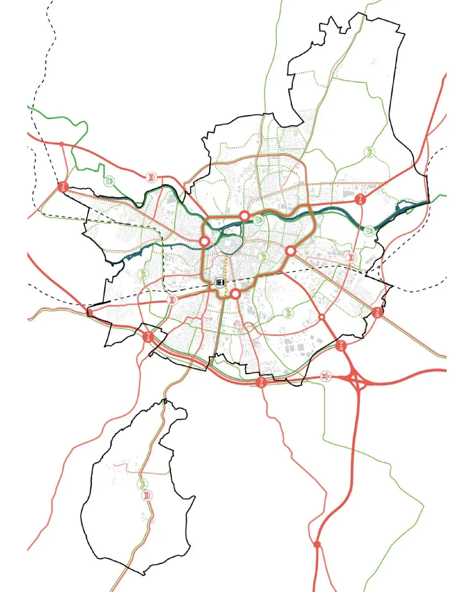
發布時間：2026-06-08 22:44:14
按讚：1,159 留言：0
Follow <a href="/profile/urbandesignlab.in/">@urbandesignlab.in</a>
České Budějovice zoning plan presents a resilient urban vision where ecology, water management, and spatial planning work together to guide long-term transformation.
The...
直接開啟媒體（無廣告）
開啟 Instagram 原始貼文
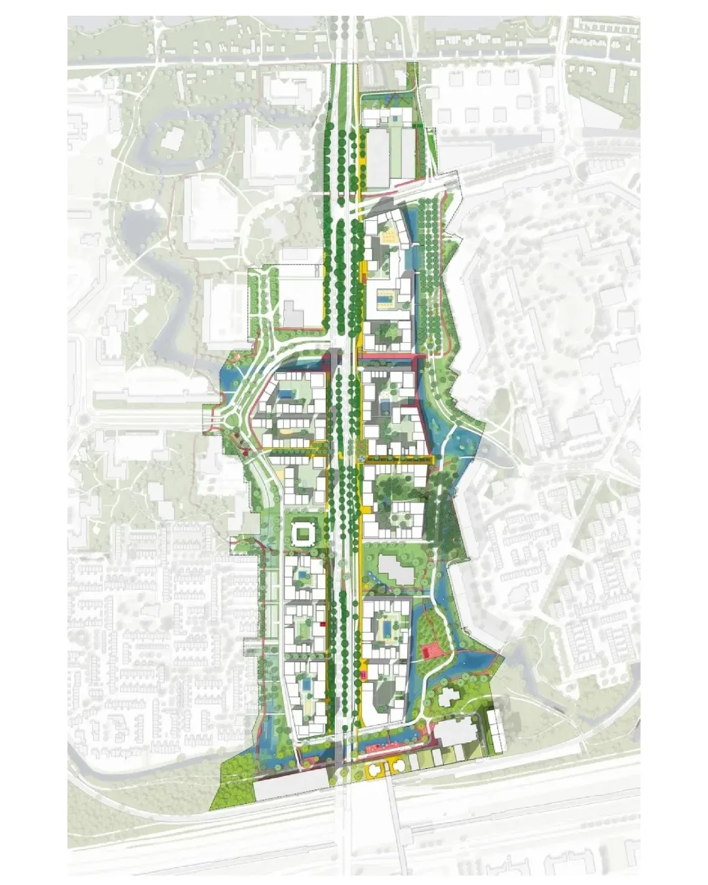
發布時間：2026-06-08 15:57:58
按讚： 留言：1
Follow <a href="/profile/urbandesignlab.in/">@urbandesignlab.in</a>
Entree Zoetermeer reimagines a highway-adjacent infrastructure zone as a healthy, green, and connected urban district for the next phase of the city’s growth.
Located be...
直接開啟媒體（無廣告）
開啟 Instagram 原始貼文
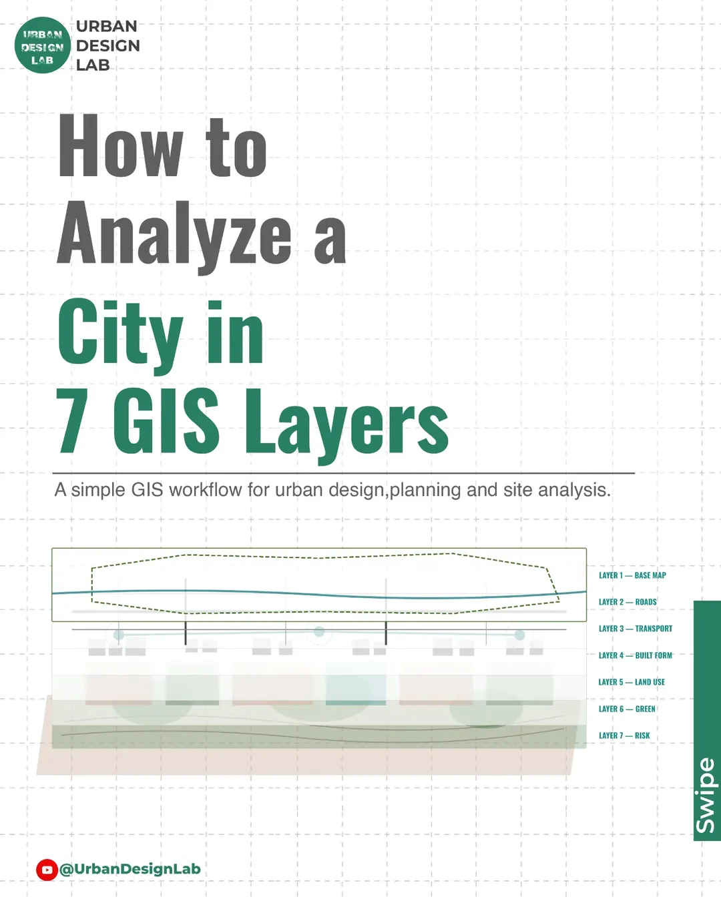
發布時間：2026-06-07 22:17:39
按讚：849 留言：16
Follow <a href="/profile/urbandesignlab.in/">@urbandesignlab.in</a>
A city is not understood through one map, but through a sequence of spatial layers.
GIS helps decode urban complexity by separating the city into readable layers, from b...
直接開啟媒體（無廣告）
開啟 Instagram 原始貼文

發布時間：2026-06-06 14:15:25
按讚：1,159 留言：1
Follow <a href="/profile/urbandesignlab.in/">@urbandesignlab.in</a>
QGIS plugins are not just add-ons. They expand mapping into a complete process of data collection, spatial analysis, urban interpretation, and visual communication.
Impo...
直接開啟媒體（無廣告）
開啟 Instagram 原始貼文
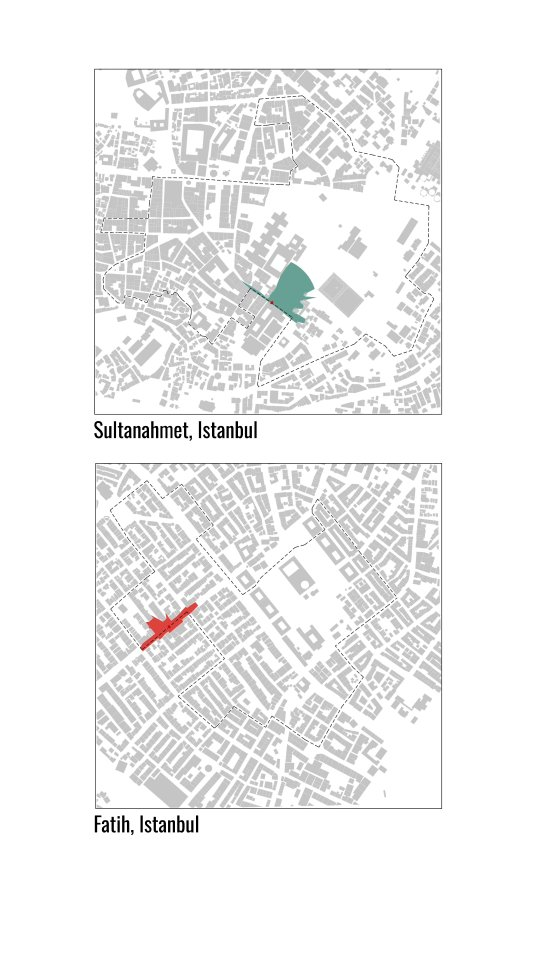
發布時間：2026-06-05 23:57:33
按讚： 留言：0
Follow <a href="/profile/urbandesignlab.in/">@urbandesignlab.in</a>
Reading Istanbul through visibility, movement and spatial experience.
The isovist movement maps of Sultanahmet and Fatih reveal how GIS-based spatial analysis can help d...
直接開啟媒體（無廣告）
開啟 Instagram 原始貼文

發布時間：2026-06-05 22:32:09
按讚： 留言：0
Follow <a href="/profile/urbandesignlab.in/">@urbandesignlab.in</a>
Oberbillwerder reimagines Hamburg’s urban edge as a connected district where city life, landscape systems, mobility, and climate-conscious planning work together.
Locate...
直接開啟媒體（無廣告）
開啟 Instagram 原始貼文
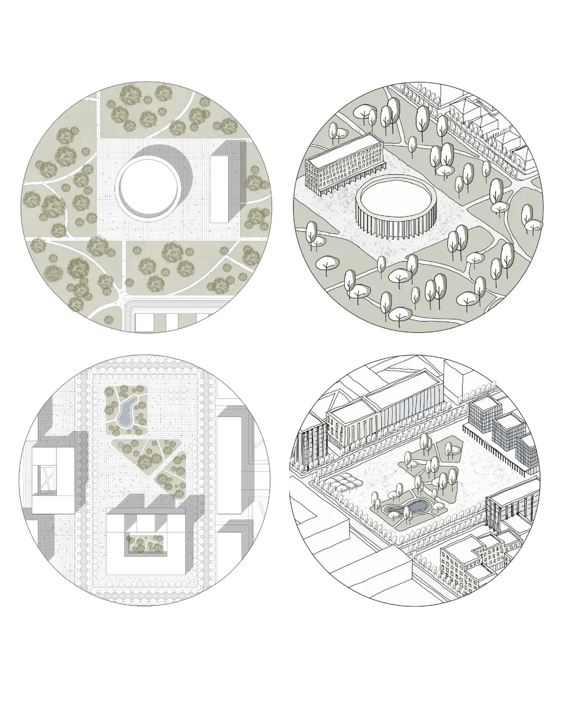
發布時間：2026-06-05 17:56:26
按讚：1,365 留言：0
Follow <a href="/profile/urbandesignlab.in/">@urbandesignlab.in</a>
Modular Green City imagines a future urban model where flexibility, walkability, mixed use, and ecological networks shape a more adaptable city.
The proposal is structur...
直接開啟媒體（無廣告）
開啟 Instagram 原始貼文

發布時間：2026-06-05 02:09:57
按讚： 留言：2
Follow <a href="/profile/urbandesignlab.in/">@urbandesignlab.in</a>
The Municipal Park of Bixiga in São Paulo reimagines the reopening of the Bixiga River as a cultural, ecological, and public landscape intervention.
More than exposing a...
直接開啟媒體（無廣告）
開啟 Instagram 原始貼文

發布時間：2026-06-05 00:53:16
按讚： 留言：5
The city was never just buildings.
It was color. It was signage. It was storefronts. It was cars, crowds, neon, advertisements, materials, shadows, textures, and chaos.
Old cityscapes often carried a strong visual memory. McDonald’s had golden arches rising fr...
直接開啟媒體（無廣告）
開啟 Instagram 原始貼文

發布時間：2026-06-04 16:23:37
按讚： 留言：0
Follow <a href="/profile/urbandesignlab.in/">@urbandesignlab.in</a>
Home proposes a scalable, community-led housing model that rethinks how sustainable neighbourhoods can be designed, built, and lived in.
Developed as a concept for the D...
直接開啟媒體（無廣告）
開啟 Instagram 原始貼文
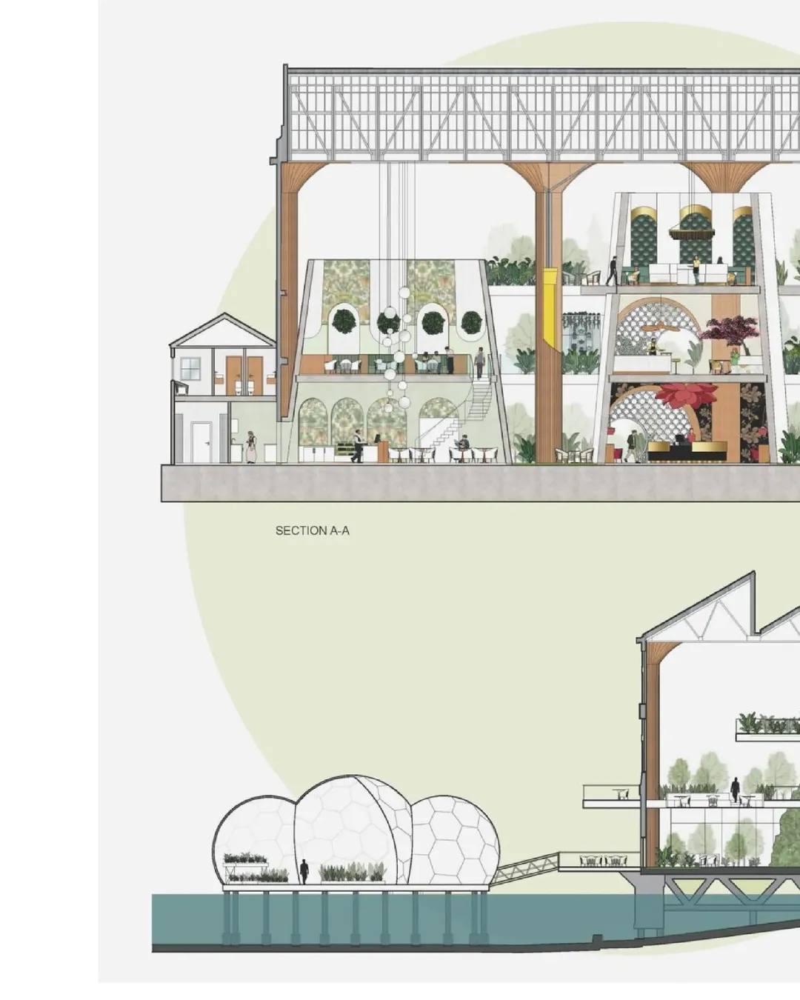
發布時間：2026-06-03 23:31:31
按讚： 留言：1
Follow <a href="/profile/urbandesignlab.in/">@urbandesignlab.in</a>
The Kolomenka River recreation area transforms a historic riverbank into an active, inclusive, and landscape-driven public realm for Kolomna.
Developed by BASIS bureau, ...
直接開啟媒體（無廣告）
開啟 Instagram 原始貼文
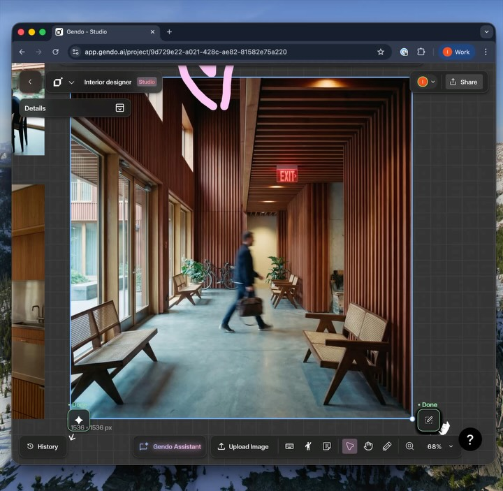
發布時間：2026-05-21 18:36:29
按讚：218 留言：6
design streams
having fun with the new Gendo edit tool
#architecture #interior #design #gendo
直接開啟媒體（無廣告）
開啟 Instagram 原始貼文
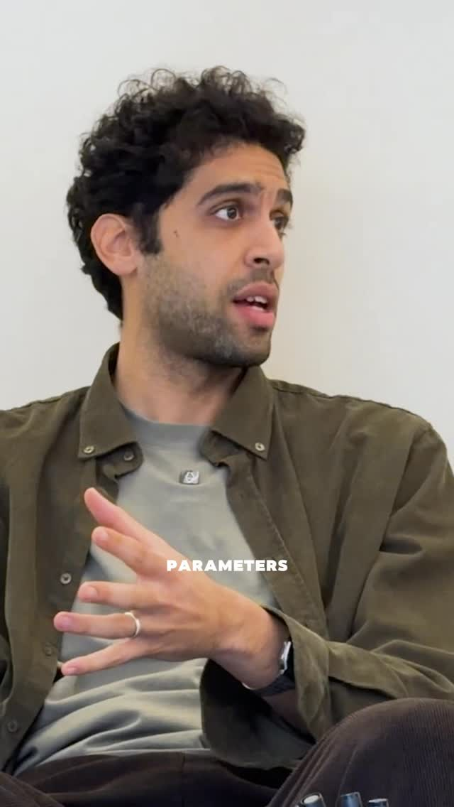
發布時間：2026-05-19 20:57:29
按讚：200 留言：0
Ever wondered if you should be running AI locally or through an API? We’re debating the open vs closed-weight model divide and much much more on the latest episode of Drawing the Line with <a href="/profile/ismailseleit/">@ismailseleit</a>...
直接開啟媒體（無廣告）
開啟 Instagram 原始貼文
發布時間：2026-05-18 17:52:21
按讚：377 留言：2
randomly ordered
#ai #aiarchitecture #architecture #design #facade
直接開啟媒體（無廣告）
開啟 Instagram 原始貼文

發布時間：2026-05-16 16:50:58
按讚：85 留言：2
🪖
#ai #architecture #aiarchitecture #design
直接開啟媒體（無廣告）
開啟 Instagram 原始貼文

發布時間：2026-05-14 15:08:14
按讚：80 留言：2
🧱
#ai #aiarchitecture #architecture #design
直接開啟媒體（無廣告）
開啟 Instagram 原始貼文
發布時間：2026-05-12 21:05:45
按讚：181 留言：0
70,000+ image generated in 48hrs, 600+ signups, 22 shortlisted, and incredible design boards we have a WINNER!
was such an incredible experience really looking forward to the next one, congrats to all the winners!! 🎉
#ai #competition #gendo48 #architecture #de...
直接開啟媒體（無廣告）
開啟 Instagram 原始貼文

發布時間：2026-05-10 15:32:36
按讚：299 留言：4
🌾
#ai #architecture #aiarchitecture #design
直接開啟媒體（無廣告）
開啟 Instagram 原始貼文

發布時間：2026-05-06 16:41:59
按讚：3,040 留言：1,086
Holding another free workshop next week (Thursday 14 May) with the one and only <a href="/profile/gproud1/">@gproud1</a> going through all the latest updates released in Gendo and listening to questions and suggestions you might have!
Co...
直接開啟媒體（無廣告）
開啟 Instagram 原始貼文

發布時間：2026-05-05 15:06:26
按讚：237 留言：0
infinite edits with zero image degradation using the newly released edit tool in Gendo! 🔳
example here showing 18 consecutive edits on the same image, but could have gone for more
#ai #aiarchitecture #architecture #design #gendo
直接開啟媒體（無廣告）
開啟 Instagram 原始貼文

發布時間：2026-05-04 16:58:03
按讚：77 留言：1
🐝
#ai #architecture #aiarchitecture #design
直接開啟媒體（無廣告）
開啟 Instagram 原始貼文
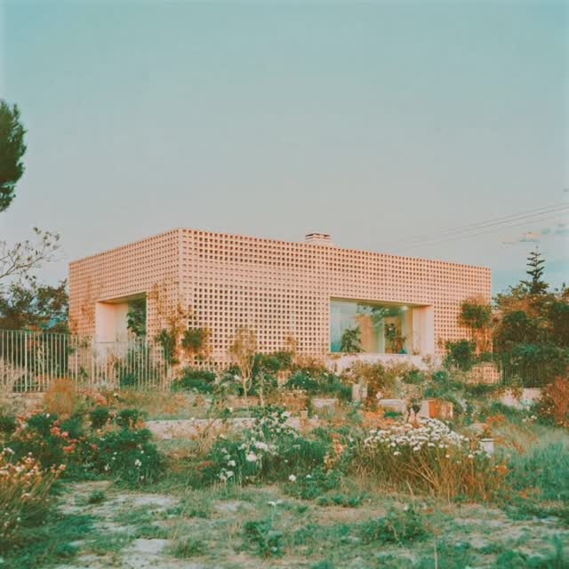
發布時間：2026-05-03 17:06:18
按讚：100 留言：2
🔳
#ai #architecture #aiarchitecture #design
直接開啟媒體（無廣告）
開啟 Instagram 原始貼文

發布時間：2026-05-02 17:22:19
按讚：121 留言：0
⚡️
#ai #architecture #aiarchitecture #design
直接開啟媒體（無廣告）
開啟 Instagram 原始貼文
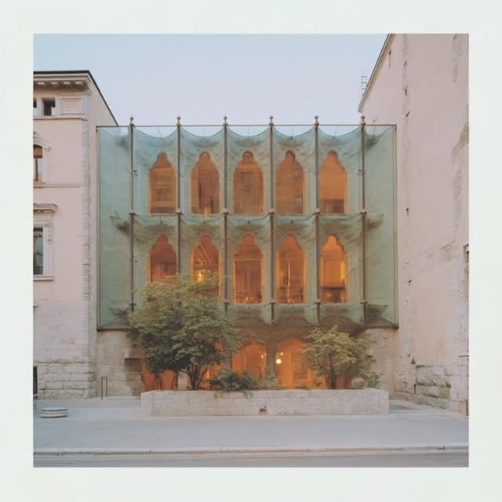
發布時間：2026-05-01 14:15:13
按讚：215 留言：4
👗
#ai #architecture #aiarchitecture #design
直接開啟媒體（無廣告）
開啟 Instagram 原始貼文
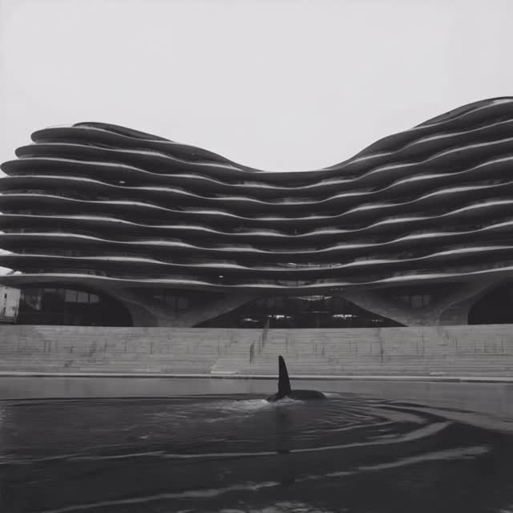
發布時間：2026-04-30 14:18:39
按讚：167 留言：2
🐋
#ai #aiarchitecture #architecture #design
直接開啟媒體（無廣告）
開啟 Instagram 原始貼文
發布時間：2026-04-29 15:10:05
按讚：186 留言：0
🧱
#ai #aiarchitecture #architecture #design
直接開啟媒體（無廣告）
開啟 Instagram 原始貼文

發布時間：2026-04-28 15:05:24
按讚：400 留言：2
🐎
#ai #aiarchitecture #architecture #design
直接開啟媒體（無廣告）
開啟 Instagram 原始貼文

發布時間：2026-04-27 23:55:14
按讚：186 留言：0
🦌
#architecture #design
直接開啟媒體（無廣告）
開啟 Instagram 原始貼文

發布時間：2026-04-22 15:40:39
按讚：150 留言：2
four
#ai #aiarchitecture #architecture #design
直接開啟媒體（無廣告）
開啟 Instagram 原始貼文

發布時間：2026-04-20 17:28:45
按讚：84 留言：175
THIS WEEKEND we are hosting our first hackathon-style design competition series GENDO 48 with a chance to win £5,000! 💸
Comment “GENDO 48” below for link to early free registration. 👇🏽
The idea behind GENDO 48 is having the platform completely unlocked during ...
直接開啟媒體（無廣告）
開啟 Instagram 原始貼文

發布時間：2026-04-15 23:02:26
按讚：319 留言：343
really excited for tomorrow’s free workshop with <a href="/profile/architech.network/">@architech.network</a> and <a href="/profile/gendo.ai/">@gendo.ai</a> 🎉
comment “workshop” below if you still haven’t registere...
直接開啟媒體（無廣告）
開啟 Instagram 原始貼文
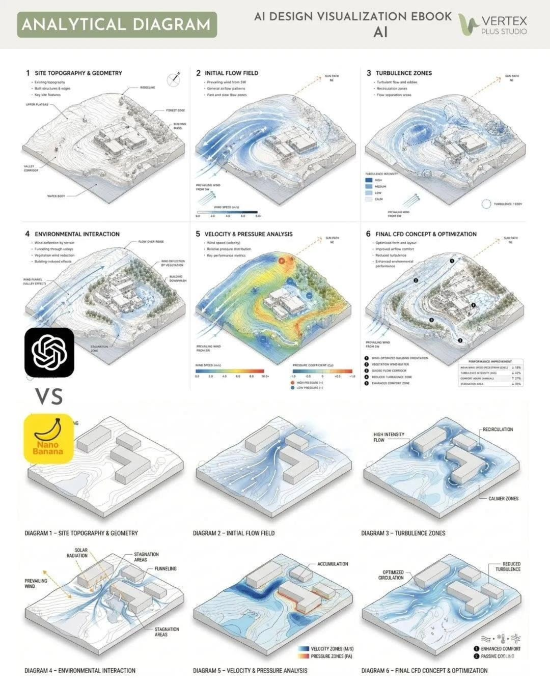
發布時間：2026-06-08 14:19:21
按讚：23 留言：0
如果是你的作品集 / 案子
你覺得哪一張更符合建築 / 景觀 / 規劃的實務需求？
⚠️ 設計師備註： 「AI 負責生成風格，而不是數據分析。不要要求 AI『繪製風的路徑』，因為它不理解物理原理，它只會畫出隨機方向的箭頭。科學部分（如箭頭與數據）應由你來定義，AI 負責表現（如基礎模型與視覺）。如果可行，應先進行正確的 CFD 模擬分析。」
AI 設計視覺化電子書 已更新至120+頁；
v2.0 迷你課程 早鳥預售50%至6月底
會包含更多場地分析，爆炸圖，分析圖應用
💬 留言 Diagram 我會私訊你工作流連結...
直接開啟媒體（無廣告）
開啟 Instagram 原始貼文
發布時間：2026-06-07 13:58:30
按讚：2 留言：0
【加拿大IT谷友 - 線上分享會】
AI x Design Workflow + 一人公司
AI 設計流程 : 谷友不是設計背景，會分享設計基礎如何融入AI
Part 1 一人公司：分享一人公司有趣經歷
Part 2 互動交流：Miro商模互動教學，希望你都跟住做，開Mic一齊傾
語言 : 廣東話
形式: Zoom (全程錄影 *不想出鏡的朋友不要開cam)
活動時間：
🇨🇦 溫哥華：
6月10日 (三) 5:00 PM - 7:00 PM
🇨🇦 多倫多：
6月10日 (三) 8:00 PM - 10:00 PM
...
直接開啟媒體（無廣告）
開啟 Instagram 原始貼文
發布時間：2026-06-06 15:00:25
按讚：342 留言：80
這些高複雜度的提案版面，背後的靈魂是 ChatGPT 的展板指令控制。
很多人以為生圖只能一張一張來，最後再進 InDesign 痛苦地對齊排版。
但其實，只要你懂得利用 ChatGPT強大的邏輯整合能力，你可以直接下達版面架構指令。
要讓 AI 產出具備「專業邏輯」的版面，你的指令必須包含：
1️⃣ 空間模組化： 明確劃分 Masterplan、Diagrams 與 Renderings 的佔比。
2️⃣ 數據視覺化： 讓文字 AI 理解水質、生態指數等分析圖表的呈現方式。
3️⃣ 視覺語言統一： 寫出能精準鎖定...
直接開啟媒體（無廣告）
開啟 Instagram 原始貼文
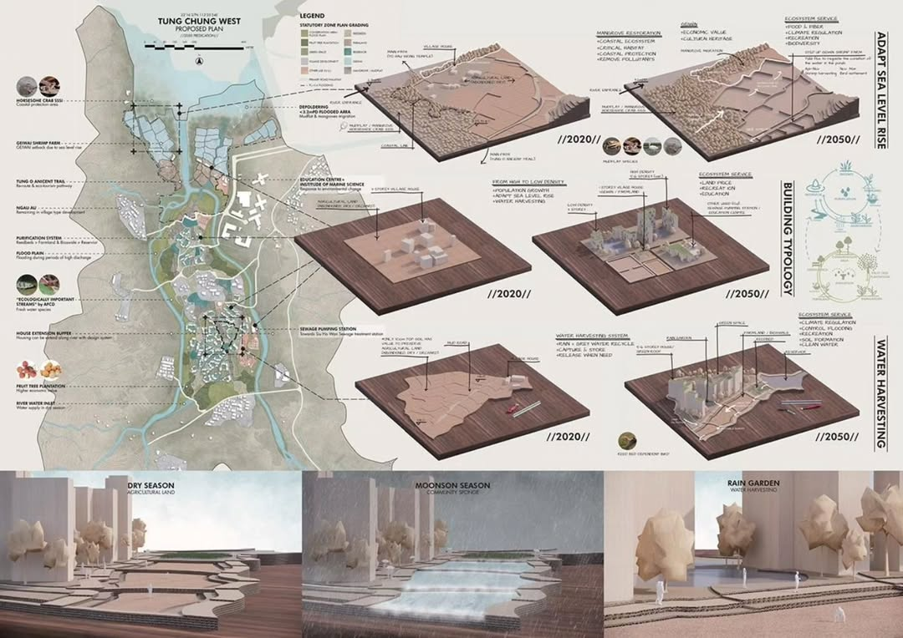
發布時間：2026-06-02 13:10:44
按讚：24 留言：0
一轉眼，距離在香港大學完成這份景觀建築碩士作品，已經過了五年。🎓
這份名為《Communities in the Valley, Ecologies of the Estuary》的學術提案，當年有幸獲得了 HKIUD 城市設計大獎與 HKILA YLAG的雙料肯定。
當時，我把目光放在了面臨 2024 年擴建開發壓力、以及全球氣候變遷威脅的東涌河谷。那裡有著極具價值的紅樹林、濕地與逐漸消逝的村落。面對政府的高密度填海計畫，我試圖提出一個與海平面上升共生的替代方案。
透過 2020 到 2050 年的時間軸推演，我...
直接開啟媒體（無廣告）
開啟 Instagram 原始貼文
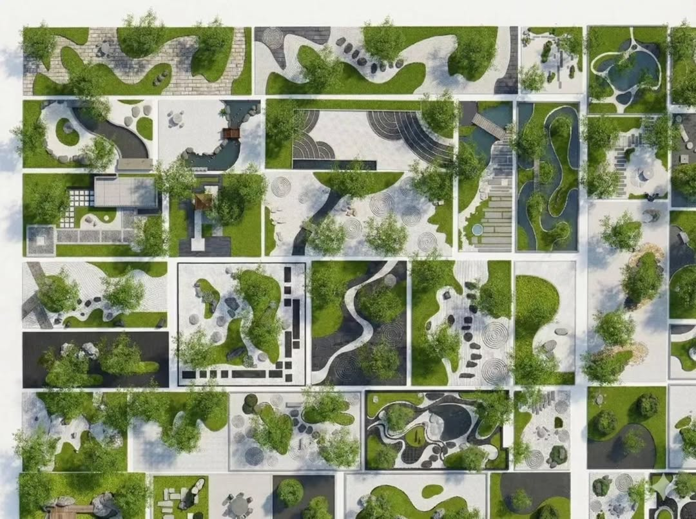
發布時間：2026-06-01 13:26:12
按讚：94 留言：1
在 SketchUp 建模時，我們習慣了用 Push/Pull 去推拉建築的量體。
但往往忽略了，景觀設計的靈魂，其實在於地面那微妙的 Z 軸變化。很多設計師做庭園渲染時，習慣直接拉一個平整的面，貼上草皮材質就完事。
結果就是：石頭像是浮在半空、草地像是一張綠色的地毯、水面像是一塊藍色的玻璃。完全沒有「重量感」。
這套 Sketchup 微地形模型庫，就是為了打破這種「零高差」的僵局。
請仔細看這些俯視圖中的陰影細節：
一、 苔蘚的呼吸感
真正的苔蘚不是平的，它是有體積（Volume）的饅頭狀。
模型中精...
直接開啟媒體（無廣告）
開啟 Instagram 原始貼文
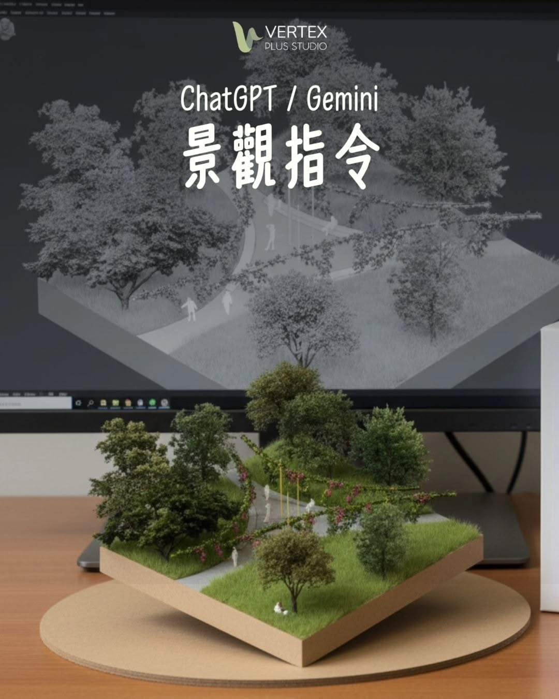
發布時間：2026-05-31 14:58:23
按讚：34 留言：8
還記得以前為了做一個概念手工模型，切珍珠板、黏樹粉、割到手，最後還要打光拍照熬到天亮的恐懼嗎？🩸
來看看這張圖。桌上那個帶有真實草皮紋理、手工紙質感的景觀實體模型，以及背後螢幕裡的灰模軟體畫面⋯⋯全都是 AI 直接生成的。
還可以透過精準的指令控制轉換剖面，多角度isometric，放大局部等分析圖。
💬留言 AI 私訊你120+頁實戰工作流程
‐-----------------
⚠️AI 設計視覺化v2.0 迷你課程 6月底上線
早鳥預售中 50%off
------------------
［<a h...
直接開啟媒體（無廣告）
開啟 Instagram 原始貼文
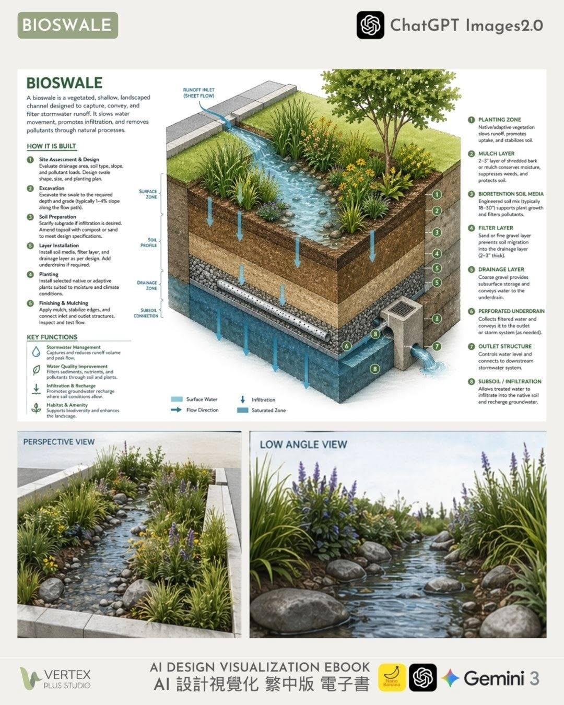
發布時間：2026-05-30 15:48:49
按讚： 留言：0
我書裡寫的 Workflow 是通用邏輯：
一樣的 Prompt，換上新模型，效果直接輾壓。
全程純 Text-to-Image，產出這些生態草溝 (Bioswale) 的分析與大樣圖，大概只花了我一杯咖啡的時間。
這次的細部說明圖真的會嚇到：
1️⃣ 中英文更細膩，整體 make sense，不仔細看難以察覺錯誤
2️⃣ 它居然懂得自己判斷立剖面轉換，哪裡需要特別 call-outs 來繪製！
雖然目前的工法與精準度80%還差一點，20%後續微調仍花大量時間，但相信未來只要把專屬的設計資料庫餵給它，如能讀取...
直接開啟媒體（無廣告）
開啟 Instagram 原始貼文

發布時間：2026-05-29 10:33:12
按讚：358 留言：2
一張滿滿資訊的景觀排版是怎麼用 AI 生成的？絕對不是只靠一句 "make a landscape board" 就能搞定。
完整提案版面，要讓 AI 產出這種具備高度邏輯與系統性的設計圖，關鍵在於我們如何拆解提示詞。
這套「提示詞進階應用與排版拆解」心法，已經完整收錄在6月底推出的《AI 設計視覺化 v2.0》迷你課程中，現在早鳥預售50%off。
💬留言 V2 私訊你預售連結
------------------
［<a href="/profile/vertex.sk...
直接開啟媒體（無廣告）
開啟 Instagram 原始貼文

發布時間：2026-05-28 12:24:05
按讚：85 留言：6
業主看圖時最愛問的一句話：「設計師，這個公園到了十一月秋天，會長什麼樣子？」🍂
以前聽到這句話，心裡都在滴血。因為這代表你要打開 3D 軟體，把所有的櫻花樹跟常綠喬木刪掉，重新種上秋天的樹種模型，重新設定枯黃的草地材質，最後再花兩個小時重新算圖 (Render)...
現在？直接把原圖丟給 AI。
十秒鐘。它完全鎖定你原有的地形、步道邏輯與人物尺度，直接幫你「無痛換季」，甚至連地面落葉的細節都幫你鋪好了。你完全不需要重新替換任何 3D 材質。
想掌握這套「能放能收」的完整工作流？
《AI 設計視覺化v2.0 迷你課...
直接開啟媒體（無廣告）
開啟 Instagram 原始貼文
發布時間：2026-05-27 13:08:07
按讚： 留言：0
今天翻出一個前幾年討論度極高的商業元宇宙概念項目。
當時，我們設計團隊 (JumboGlobe) 提出了「H-CUBE 元宇宙商業概念」，並幸運拿下了全國創意傳播大賽的卓越創作獎。讓同一個實體街區，能快速切換出不同維度的商業體驗。
H-CUBE 的核心邏輯很明確：
👉 To C 端： 透過 AR 疊加，讓實體商場瞬間擁有無限種主題體驗（衣食住行創），解決線下商業無法頻繁改裝的痛點。
👉 To B 端： 為商鋪打造平行的虛擬展廳，例如結合國潮文化的尋寶互動，增強客群黏性。
回頭看這個專案，最讓我感嘆的是科技的迭代速度...
直接開啟媒體（無廣告）
開啟 Instagram 原始貼文

發布時間：2026-05-26 13:50:48
按讚：96 留言：0
從一張 Google Earth 衛星空照圖，到生出這 6 張專業的「區位分析圖 (Site Analysis)」，你通常需要花幾天？⏱️
以前的標準動作：OpenStreet Map ➡️ 丟進 Illustrator ➡️ 鎖定圖層 ➡️ 分層海岸線、主幹道、次幹道 ➡️ 用色塊填滿功能分區... 畫完天都亮了，但設計根本還沒開始做。💀
現在，請看看這套「Google Earth to Diagram」的工作流。
只要給定明確的分析框架與 Prompt，AI 就能從複雜的衛星影像中，精準提取並轉譯出 6 大城市...
直接開啟媒體（無廣告）
開啟 Instagram 原始貼文

發布時間：2026-05-25 15:20:29
按讚：559 留言：124
很多人問我，為什麼我的 AI 圖不會有那種「失控的塑膠拼湊感」？
秘密藏在第三張圖下方的 Prompt 裡。🤫
現在？只要你懂得建立正確的「AI 工作流邏輯」
✔️ 指定底圖投射方式
✔️ 指定視覺風格
✔️ 指定圖例 必須包含清晰的中英雙語
當你學會這樣拆解邏輯，不管是要做生動的建築競圖，還是複雜的量體機能分析，AI 都能完美執行你的意志。
想掌握這套「能放能收」的完整工作流？
《AI 設計視覺化v2.0 迷你課程》50% OFF 早鳥預售中，準備好升級武器庫的朋友，連結見主頁！👇
💬留言 AI 取得120+頁實...
直接開啟媒體（無廣告）
開啟 Instagram 原始貼文

發布時間：2026-05-24 12:57:23
按讚：76 留言：0
今天我想分享一個多年前完成的獲獎公園項目「繁花里」，一個在 AI 進入設計工作流之前的作品。
打破標籤的共享地景
在當時，「繁花里」最大的挑戰不是設計一個遊樂場，而是重新思考公共空間如何突破僵化的年齡界限。城市公園往往被標籤化地劃分為兒童區或老年區，擁有固定的設施和明確的使用規則。
相比之下，「繁花里」被構想為一個共享地景，讓不同年齡段的人能在一個統一的空間秩序下並存、探索。
自然邏輯的空間化
設計靈感源自花卉的生命週期，從花粉、花蕾到盛放與結果。我們利用這一自然過程來組織空間序列、活動強度和社交互動。動態區與靜態...
直接開啟媒體（無廣告）
開啟 Instagram 原始貼文

發布時間：2026-05-22 13:14:12
按讚：24 留言：0
手繪是為了思考，AI 是為了說服
自從 Midjourney 和 Gemini 3 出現後，很多學生問我：「還需要學手繪嗎？」
看著這張對比圖，我的答案依然是肯定的。但目的已經變了。
Rendering 渲染 其實這不是一個3D時間代才出現的名詞，早期大家還在手畫的時候就有了。簡單來說，就是經過設計思考，並呈現出各個材質的特性。
手圖 - 模糊的魅力
手繪線稿， 那些顫抖的線條、溢出的麥克筆觸，其實不是潦草，而是可能性。在設計初期，腦袋會自動腦補出一千種構造，這是一種發想的過程。
AI圖 - 確定性出圖
AI 渲染...
直接開啟媒體（無廣告）
開啟 Instagram 原始貼文
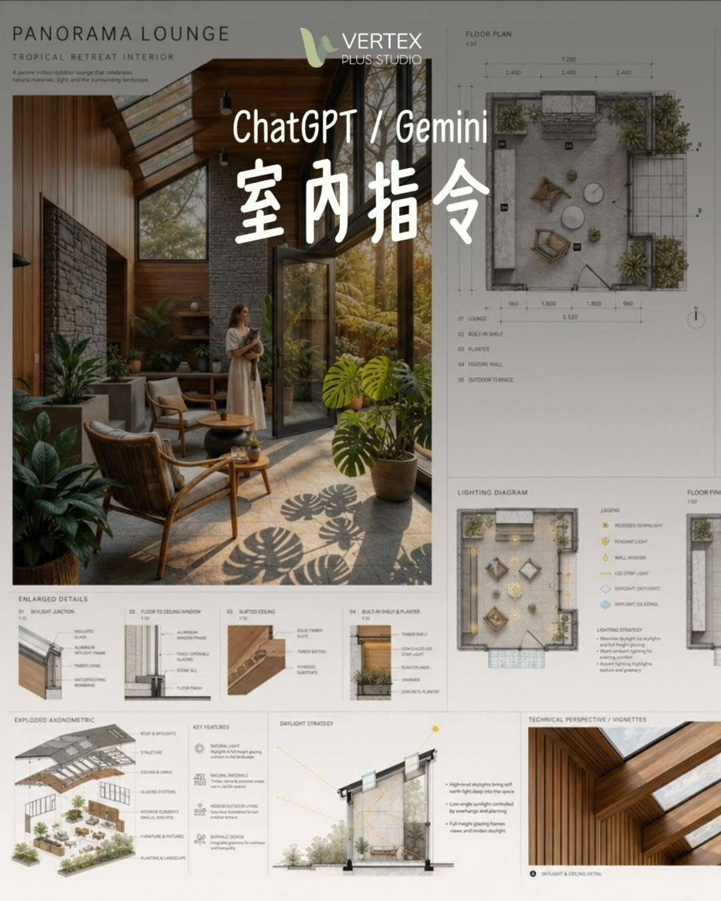
發布時間：2026-05-21 13:46:44
按讚：29 留言：34
室內設計們正耗費數小時處理的細節，AI 現在只需幾分鐘就能整理完畢。
如今的差距不再在於誰更努力，而在於誰懂得如何駕馭這些工具。
現在，AI 能夠將一張簡單的平面圖、剖面圖或參考圖片，直接轉化為具備技術深度、視覺層次與事務所級別美感的高階簡報。
這不是千篇一律的機器產出，而是真正的專業溝通。
留言 AI 我會私訊你
我整合8年設計經驗的120頁+AI視覺化工作流
直接開啟媒體（無廣告）
開啟 Instagram 原始貼文

發布時間：2026-05-20 12:52:34
按讚： 留言：2
建築師往往有一種「色彩恐懼症」。
我們習慣停留在 Rhino模型 或 線稿階段，因為黑白最安全，不易出錯。 但安全也意味著: 平庸
最近更新了 eBook 的章節，專門探討如何為分析圖，套上電影級濾鏡
資訊性（Information） 線條清晰，模型準確。 但你的視線是游離的，不知道該看哪裡。 這是一張標準的工程說明書。
敘事 (Narrative) 當我們套用了一組 "Earth Tone"後 -
深茶色: 定義了公共空間的重量感 -
暗金黃: 點亮了垂直動線與核心節點，引導視線向上流動 -
...
直接開啟媒體（無廣告）
開啟 Instagram 原始貼文
![別再只丟一張完成圖。
把設計拆開。讓每一層都能被看懂。
爆炸圖不是炫技，是證明你有思考順序。
圖一打開，平面 → 結構 → 空間 → 流線 → 景觀
就已經在告訴教授：「這個設計，是被推導出來的。」
圖中PSD原分析圖可在Etsy找到
👇留言 AI 私你120+頁AI視覺化工作流
------------------
［<a href="/profile/vertex.skills/">@vertex.skills</a> ]
💡 Design x AI Workflo...](images/vertex.skills_17_6727135441427334501936.jpg)
發布時間：2026-05-19 12:29:15
按讚：50 留言：2
別再只丟一張完成圖。
把設計拆開。讓每一層都能被看懂。
爆炸圖不是炫技，是證明你有思考順序。
圖一打開，平面 → 結構 → 空間 → 流線 → 景觀
就已經在告訴教授：「這個設計，是被推導出來的。」
圖中PSD原分析圖可在Etsy找到
👇留言 AI 私你120+頁AI視覺化工作流
------------------
［<a href="/profile/vertex.skills/">@vertex.skills</a> ]
💡 Design x AI Workflo...
直接開啟媒體（無廣告）
開啟 Instagram 原始貼文

發布時間：2026-05-18 12:58:25
按讚：49 留言：2
今天分享一套 ChatGPT Image 2.0
景觀設計指令 (7)
效果圖 → 轉換角度 → 放大細節
→ 分析圖 → 更多見貼文(1)-(6)
一次生成完整設計表現✨️
更可串連更多分析圖，各種後期修改
1️⃣ 效果圖變換角度
2️⃣ 效果圖放大細節
3️⃣ 效果圖變分析圖
4️⃣ 總平面轉各種平立剖圖分析圖
👍試試運用工作流程放進你的景觀設計，
你會得到：
----‐‐------------
⭐️5月30日
AI Sketch to Render 工作坊
早鳥優惠延至 v2.0 DLC 迷你課程上線
👇任...
直接開啟媒體（無廣告）
開啟 Instagram 原始貼文

發布時間：2026-05-17 14:25:10
按讚：20 留言：0
Diagrams with Nano Banana 2.
這本書會教你如何建立一套標準化的 AI Workflow，把從草圖發想、材質渲染，到最終排版分析圖的流程，全部極速壓縮120+頁的實戰工作流程。
📚 AI 設計視覺化 繁體中文版 / AI Design Visualization: Mastering the Worflow from Concept to Professional Presentation (Life time update) Link in bio.
支持創作更多設計知識
Like Sh...
直接開啟媒體（無廣告）
開啟 Instagram 原始貼文

發布時間：2026-05-17 00:23:05
按讚：25 留言：6
告別 AE 地獄🔥 你一定想知的秘訣
做過都市設計或大尺度景觀的人都知道，要在評圖或提案時生出一支「分析圖動畫」，是一個多麼折磨人的過程。或你要花大錢請渲染團隊。
傳統的標準流程是：
從 Rhino/CAD 匯出幾十個圖層 ➡️ 進 Illustrator 慢慢上色 ➡️ 再全部丟進 After Effects 裡。
為了讓一棟建築「長出來」、讓一條動線跑過去，你必須在時間軸上痛苦地設定無數個關鍵影格與透明度。一支 10 秒的動態分析，往往要耗掉設計師三個晚上的睡眠。
但最近研究了新的 AI 動態工作流，我發...
直接開啟媒體（無廣告）
開啟 Instagram 原始貼文


![別再只丟一張完成圖。
把設計拆開。讓每一層都能被看懂。
爆炸圖不是炫技，是證明你有思考順序。
圖一打開，平面 → 結構 → 空間 → 流線 → 景觀
就已經在告訴教授：「這個設計，是被推導出來的。」
圖中PSD原分析圖可在Etsy找到
👇留言 AI 私你120+頁AI視覺化工作流
------------------
［<a href="/profile/vertex.skills/">@vertex.skills</a> ]
💡 Design x AI Workflo...](https://scontent.cdninstagram.com/v/t51.82787-15/681821524_18084796253530037_1338182290164364834_n.heic?stp=dst-jpg_e35_p1080x1080_tt6&efg=eyJ2ZW5jb2RlX3RhZyI6ImltYWdlX3VybGdlbi4xNDQwLnNkci5yZWd1bGFyX3Bob3RvLmMyIn0&_nc_ht=scontent-ord5-2.cdninstagram.com&_nc_cat=105&_nc_oc=Q6cZ2gHsKB2GyQ_8M0RMfDHx2qCI30e5FLBGMwcdSFEvC4SQEYJbTrBhC42dwjWl0J-AtgD1YoYk6QBYlWfEU4VSBPTR&_nc_ohc=VD8lKd7laAYQ7kNvwHvPebA&_nc_gid=1W7FxlfD-f-JtXosv41Arg&edm=APU89FABAAAA&ccb=7-5&oh=00_Af8O543URFW6lIfoKmly0dumGvoymhZRzoNFhADFsCRpCg&oe=6A398F20&_nc_sid=bc0c2c&dl=1)